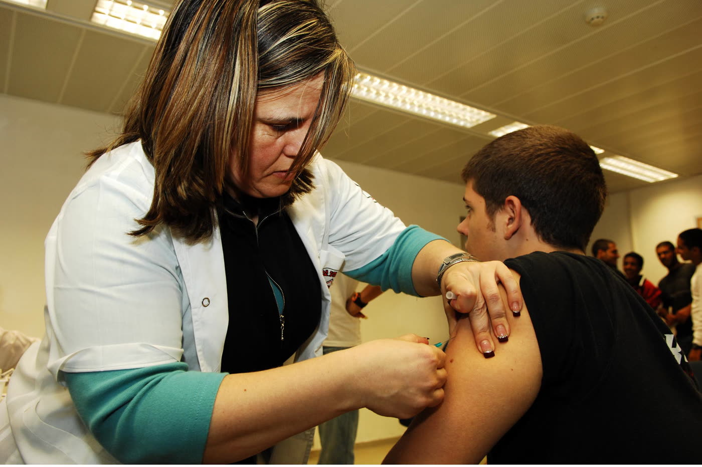
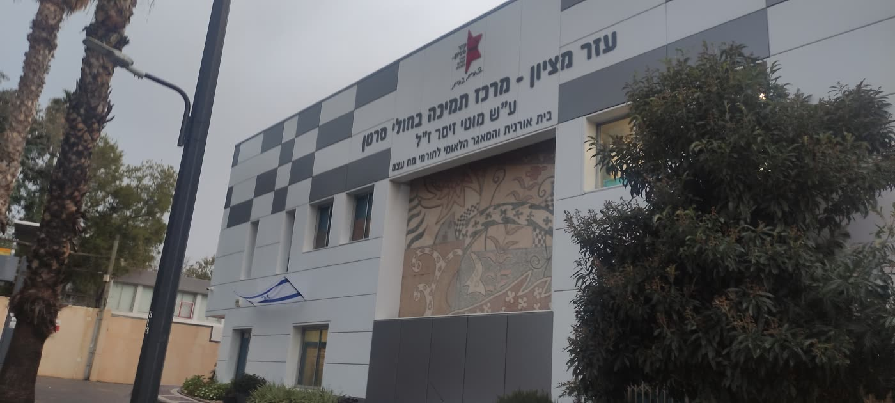
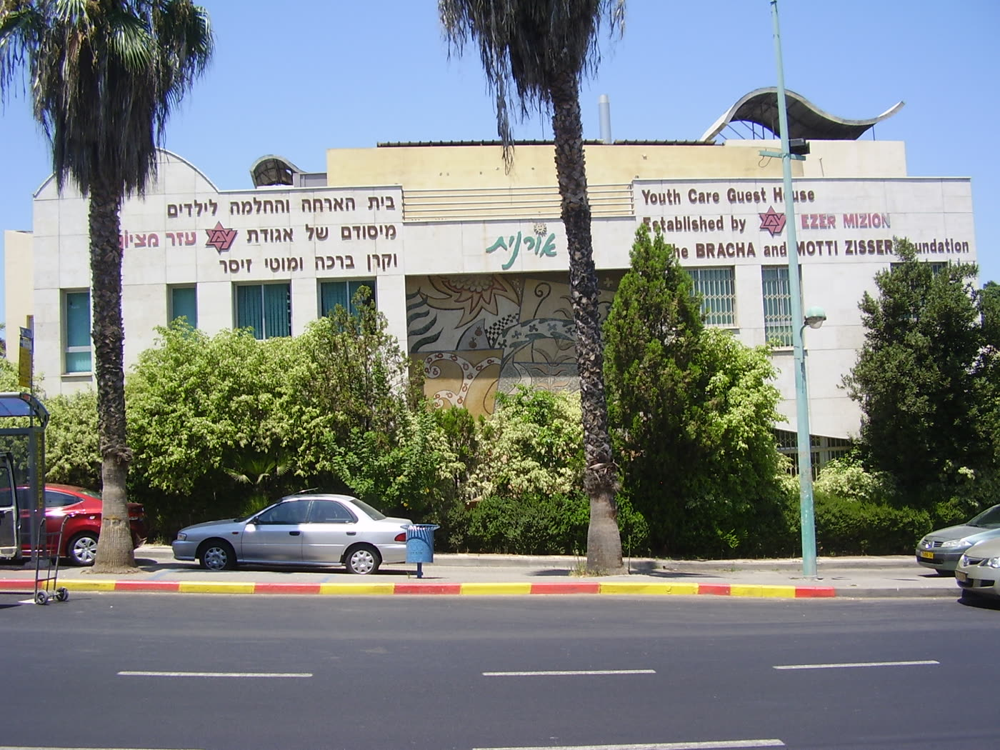
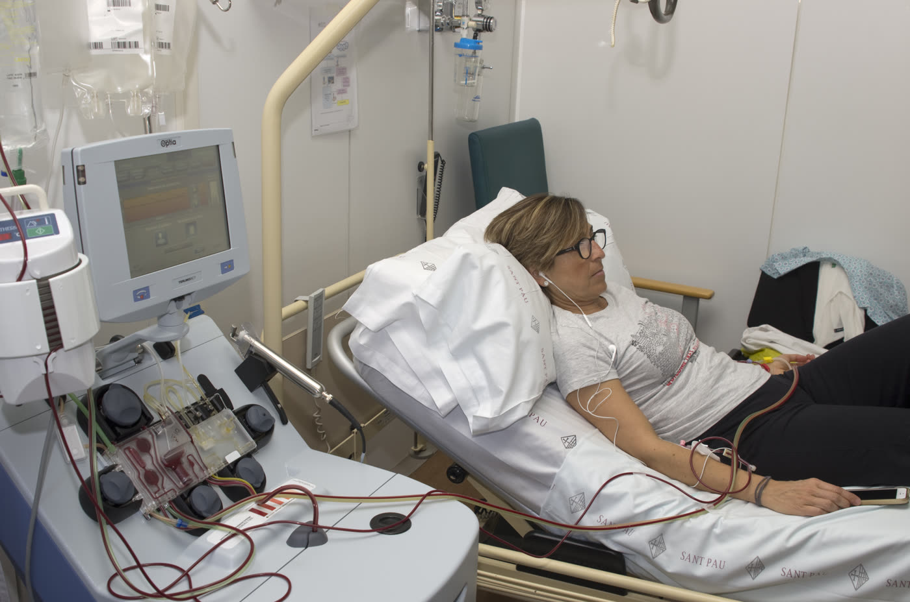
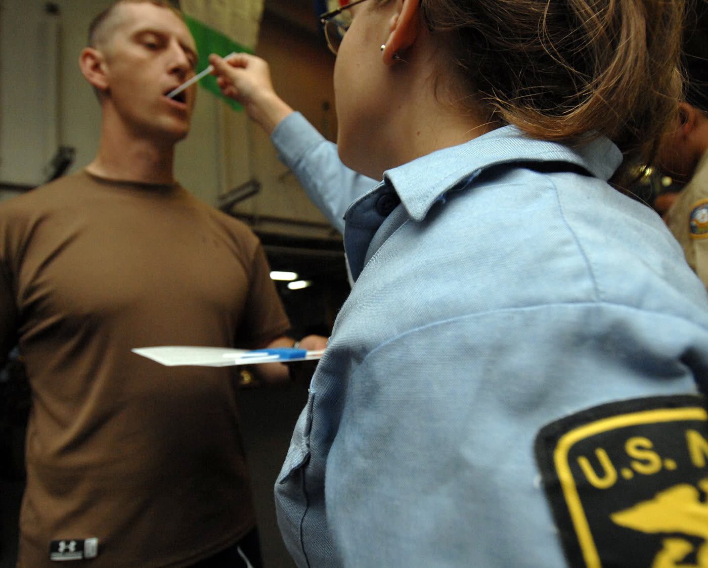
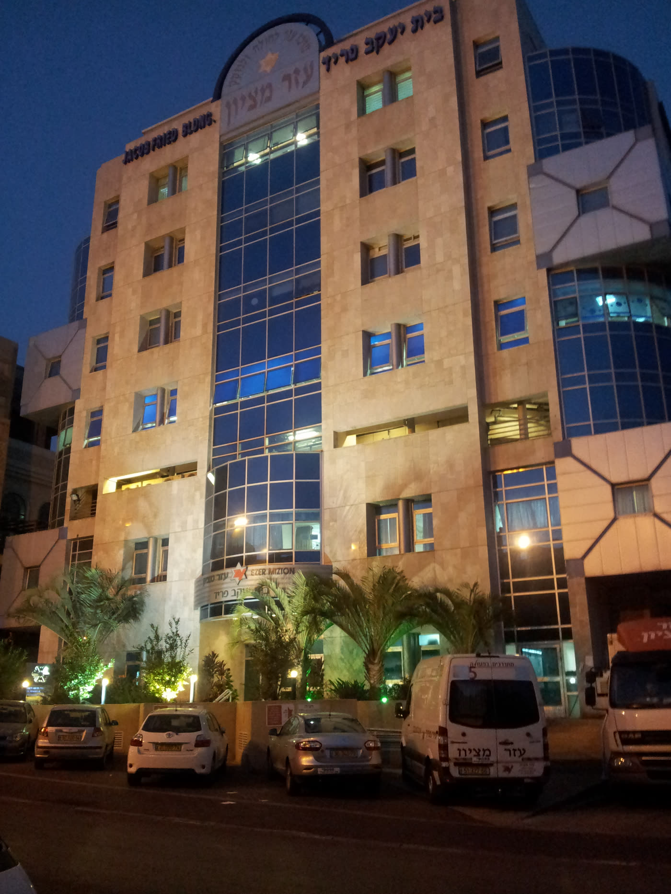
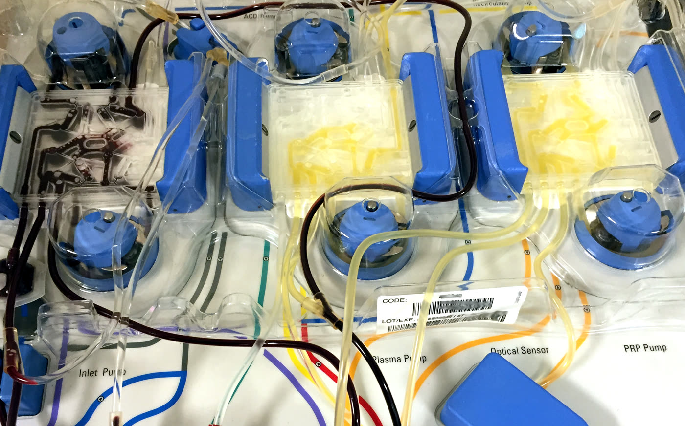

עזר מציון · 6038 מילים · 9 תמונות · 4 סרטונים







Inlet Pump, Plasma Pump, Optical Sensor, PRP Pump. אין בני אדם בפריים.; סרטון שלא תומלל לא נשקל. ‹images.md §3› הכרעה שנדחתה לשלב זה: ו-2 ו-ו-5 מספרים את אותו סוג סיפור — מפגש תורם-נתרם שהסתיים בטוב — ואין להכניס את שניהם. ‹images.md §3› ו-5 אינו נכנס. ו-2 עדיף מטעם אחד בלבד: הוא מחזיק את חוליית עמית קדוש שקטע 7 נשען עליה. שני הסרטונים נמצאים על ערוץ הארגון, ואין ביניהם הבדל בעניין הזה. ‹ממ-35 · ממ-34› ### ו-1 · "צוואתו של מוטי זיסר ז"ל" — לצד קטע 10 · עזר מציון · 17.9.2018 · 1:42 דקה ומחצה שבה עזר מציון מספרת את סיפור ההקמה בגרסה שלה עצמה, ובה המשפט שממנו נולד הכול: "אבל ברגע שהוא החלים הבנו שאנחנו חייבים להקים מאגר." בסופה מספרת ד"ר ברכה זיסר שכשבעלה חלה שוב
ר זמן נמצא תורם בהתאמה של תשעה מתוך עשרה, ושהוא לא שרד את ההשתלה. ‹ממ-22› ⚠ לצד הסרטון ייכתב בדף: זהו ערוץ הארגון, והסרטון הוא גיוס תרומות. הוא מסתיים במילים "אני ממש מרגישה שזו צוואה שלו להגדיל את המאגר, שנוכל למצוא תורם לכל יהודי שחולה בארץ ובעולם" — כלומר הבקשה מנוסחת כלפי קהל אחד, וזו אותה שאלה שקטע 4 עוסק בה. ‹ממ-22 · images.md §3› ### ו-2 · המפגש הראשון בין נתרם לתורם — לצד קטע 7 · כתבה חדשותית, מאיה איידן · הועלה לערוץ עזר מציון · 12.12.2011 · 4:57 מורן, בן שלוש וחצי, ויעקב, בן שישים, נפגשים לראשונה עם האנשים שהתרומה שלהם הצילה את חייהם. אחד מהם — סמיון, טכנאי F-16 — הצטרף למאגר בכיתה
‹ממ-35א · ממ-35ב · ממ-24ב› ⚠ לצד הסרטון ייכתב בדף: העותק היחיד שנמצא נמצא על ערוץ הארגון, ושם הגוף המשדר אינו מופיע בו. הכתבה מזוהה לפי שם הכתבת בלבד. ‹ממ-35 · images.md §3› ⚠ ההסתייגות נכתבה בגוף הדף ולא כאן — סוף קטע 8: מפגש מתקיים רק אם ההליך הצליח ורק אם שני הצדדים מעוניינים, ולכן כל מפגש שאפשר לצפות בו הוא מקרה שהסתיים בהצלחה. ‹ממ-35ג› ### ו-3 · איך אושר הפרויקט בצה"ל — לצד קטע 5 · ערוץ אלעזר שטרן · 23.9.2016 · 2:37 שני האנשים ששילבו את מאגר מח העצם בשרשרת הגיוס של צה"ל מספרים איך זה קרה, כולל החלק שלא נוח לספר: שטרן דחה את הבקשה כשהיה קצין חינוך ראשי, זיסר חזרה אליו שנים אחר כך כשכבר ה
פרים איך זה קרה, כולל החלק שלא נוח לספר: שטרן דחה את הבקשה כשהיה קצין חינוך ראשי, זיסר חזרה אליו שנים אחר כך כשכבר היה ראש אכ"א, ובישיבה שכינס "כל אחד הסביר למה לא". ‹ממ-36א · ממ-36ב› ⚠ אין לצטט מהסרטון את מספר החיילים. הדובר אומר בתוך משפט אחד גם "1,105" וגם "1,150". בדף נכתב "למעלה מאלף ומאה" רק במקום שבו הוא נתמך במקור נוסף. ‹ממ-36ג · ממ-34א› ### ו-4 · מה קורה כשמתקשרים אליך — לצד קטע 5 · עזר מציון · 31.3.2024 · 2:24 שתי דקות שבהן הארגון מסביר את התהליך כולו: טופס ודגימת רוק להצטרפות; ואם נמצאה התאמה — בדיקת דם לאימותה, בדיקות כשירות, ואז אחת משתי דרכים. רוב התורמים תורמים מהדם ההיקפי, אח
ezer-mizion (41f71ed3)נכתב: 22.8.2026 · לפי spec.md (מבנה, הכרעות ה-1…ה-12, רגע השר)
ו-images.md (תמונות ווידאו). כל משפט עובדתי נכתב מתוך journal.md.
איך לקרוא את הטיוטה הזאת. אחרי כל משפט עובדתי מופיעים בסוגריים
משולשים ‹› מזהי הממצאים שממנו הוא נולד. משפט מקשר מסומן ‹מקשר›.
אין משפט יתום. הסימון הזה הוא כלי עבודה ובקרה — הוא **יורד
לפני העלאה לאתר**, ובמקומו נשארת שכבת הערות המקורות שבתחתית.
בישראל פועל מאגר תורמי מח עצם שרשומים בו 1,296,900 בני אדם, לפי
הטבלה שמפרסם ארגון המאגרים העולמי WMDA; שורת המאגר הזה בטבלה עודכנה
ב-14 באוגוסט 2026. ‹ממ-29א›
מיון של אותה טבלה מעמיד את המאגר הזה במקום השישי מבין 78 מרשמי תורמים
בעולם. ‹ממ-29ב›
המאגר מופעל בידי עמותת עזר מציון, והוא נקרא על שם משה סחייק, נער בן
15 שחלה ונזקק להשתלת מח עצם. ‹ממ-24א · ממ-19›
לפי עדותה של ד"ר ברכה זיסר, שהקימה את המאגר ומנהלת אותו, מבצע הגיוס
שנערך למען סחייק אסף 5,000 דגימות, לא נמצא בהן תורם מתאים לו, וסחייק
נפטר. ‹ממ-25ב · ממ-19 · ה-12›
מ-5,000 התוצאות שנשארו הוקם המאגר, שנרשם בינלאומית ב-28 בינואר 1998.
‹ממ-19 · ממ-25ב · ממ-29ג›
ב-1991 ושוב ב-1994 חלה גם בעלה, מוטי זיסר, ולא נמצא תורם מתאים גם לו;
לפי עדותה ההחלטה להקים מאגר נולדה משני המקרים בו-זמנית ולא מאחד.
‹ממ-25א · ממ-25ב · ה-1›
לפי דוח WMDA לשנת 2014, כפי שצוטט במאמר שפיט משנת 2017, מן המנות
שנדרשו להשתלות בישראל מתורם מתנדב שאינו קרוב משפחה — 72% הגיעו
ממאגרים ישראליים, ומתוכן 68% מעזר מציון. ‹ממ-13ב›
עד ינואר 2020 דווח על 3,466 השתלות שבוצעו בזכות המאגר, ולפי דיווח
הארגון עצמו באתרו נכון ל-2026 מדובר ב-6,652. ‹ממ-20 · ממ-05 · ה-3›
זיסר אומרת גם שהסיכוי למצוא תורם בתוך מבצע גיוס יחיד אינו גדול,
ושמתוך אותם אלפים שהמאגר סייע להם נפטרו עשרה עד עשרים אחוזים.
‹ממ-24ב · ממ-25ד›
(תשעה משפטים.)
לפי עדותה של ד"ר ברכה זיסר, ביום שבו יצאה קייטנת עזר מציון לירושלים
והגיעה עם המשפחות והילדים לכותל, צלצל אליה הטלפון מהמעבדה בארצות
הברית. ‹ממ-24א›
במבצע שנערך למען משה סחייק, נער בן 15 שנזקק להשתלת מח עצם, לא נמצא
תורם מתאים. ‹ממ-24א · ממ-25ב›
סחייק עמד באותה שעה בכותל עם אביו ואמו. ‹ממ-24א›
"ואני רואה אותם עומדים ומתפללים, ואני מקבלת טלפון מהמעבדה שאומרת
שאין תורם. ואני אומרת לעצמי, אני אגיד להם עכשיו או אני לא אגיד
להם? כי אני יודעת שבכותל זה רגע של תקווה […] והחלטתי לא להגיד
להם. נגמר הנופש והוא חזר למחלקה, ואז כמובן שביסרנו [=בישרנו] את
הבשורה. […] הילד תוך חודש נפטר."
— ד"ר ברכה זיסר, ערוץ 10, 2010 ‹ממ-24א›
בשבוע האחרון לאשפוזו, מספרת זיסר, ישבה לצדו ושאלה אותו מה יאחל לו.
‹ממ-24א›
"אז הוא אומר לי, יש לי שתי בקשות. אחת, תתפללי שזה ילך מהר, כי הוא
כבר מאוד סבל. ושתיים, הוא אמר לי: תזכרי, אני רוצה שיעשו מאגר על
שמי, שלא יקרה מצב שילדים ימותו כי אין להם תורם."
— ד"ר ברכה זיסר, ערוץ 10, 2010 ‹ממ-24א›
שני הדברים האלה הם עדות של אדם אחד על שיחות פרטיות, שנמסרה בטלוויזיה
שנים רבות אחרי שהתרחשו; לא נמצא לה עד נוסף. ‹ממ-24א›
גם שנת המבצע אינה מוכרעת, וארבעה מקורות נוקבים בשלוש שנים שונות:
הארגון כותב באתרו 1996, ו-ynet ב-2020 כותבת "בשנת 1996 התקיים מבצע
גיוס התרומות הראשון […] שנתיים לאחר מכן הקימו […] את המאגר"; לעומתם
מסמך שופטי פרס ישראל — המקור הרשמי ביותר שבידינו — כותב "ב-1998 פנה
ל'עזר מציון' נער חולה בסרטן, משה סחייק"; והקריינות בערוץ 10 ב-2010
אמרה "לפני עשר שנים". המקור החזק ביותר הוא כאן דווקא החריג.
‹ממ-01 · ממ-20א · ממ-14 · ממ-24א · פ-33 · ה-12›
לפי זיסר, משפחתו של סחייק התארגנה ויחד עם עזר מציון נאספו במבצע
5,000 דגימות — בשתי פעימות, 3,000 ואחר כך 2,000. ‹ממ-25ב›
הדגימות נשלחו לבדיקה במעבדה בארצות הברית, והתשובה הייתה שאין התאמה.
‹ממ-25ב · ממ-24א›
"אבל היה לנו 5,000 תוצאות, ואמרנו: אוקיי, 5,000 תוצאות, אולי אחד
מהם יתאים למישהו אחר שהיה חולה — נקים איתם מאגר מ[ח] עצם."
— ד"ר ברכה זיסר, בשבע, 2023 ‹ממ-25ב›
את אותו הדבר אמרה זיסר בקצרה כבר ב-2009, בראיון ל-ynet: ‹ממ-19›
"ערכנו מבצע ואספנו 5,000 דגימות, מתוכם לא מצאנו תורם למשה והוא
נפטר. עם זאת נותרו לנו 5,000 תוצאות ועל בסיס זה הקמנו את המאגר
שאכן קרוי לזכרו" ‹ממ-19›
מסד הנתונים של WMDA רושם את תאריך רישומו של המאגר ברשימה הבינלאומית:
28 בינואר 1998. ‹ממ-29ג›
בין השנה שבה הארגון ממקם את מותו של סחייק לבין הרישום הבינלאומי
עוברות אפוא כשנתיים. ‹ממ-01 · ממ-29ג›
הסיפור שנכתב עד כאן הוא מחצית מהסיפור, וזיסר עצמה אומרת זאת. ‹מקשר›
בעלה, איש העסקים מוטי זיסר, חלה בפעם הראשונה בגיל 31, בשנת 1991,
בלימפומה; אחרי שנה של כימותרפיה והקרנות החלים. ‹ממ-25א · ממ-23›
ב-1994 חזרה המחלה, ואז עלתה לראשונה האפשרות של השתלת מח עצם.
‹ממ-25א›
לפי עדותה, בישראל היה אז מאגר קטן בבית החולים הדסה שמנה עשרות בודדות
של תורמים, ובעולם מנו המאגרים מאות בודדות. ‹ממ-25א›
לא נמצא תורם. ‹ממ-25א›
הם נסעו לבוסטון, והרופא שם אמר להם "Go and make your arrangement".
‹ממ-25א›
הפתרון שהוצע בסופו של דבר בתל השומר, מפי פרופ' ברכה רמות, היה השתלה
עצמית ניסיונית. ‹ממ-25א›
"באותו ניסוי השתתפו עשרה חולים […] מתוכם מוטי שרד, ועוד בחור שהיה
טייס הליקופטרים בחיל האוויר, וגם הוא שרד."
— ד"ר ברכה זיסר, בשבע, 2023 ‹ממ-25א›
זיסר נוקבת בשני ניצולים מתוך עשרה משתתפים ואינה אומרת מה עלה בגורל
השמונה האחרים; **קריאת "שניים מתוך עשרה" כשיעור הישרדות היא הסקה
שלנו.** ‹ממ-25א›
"כשמוטי הבריא, יצא מבית החולים, והוא אמר לי: אני חושב שאני רוצה
לתת קורבן תודה על זה שאני חי. […] הדבר השני היה שאוקיי, צריכים
להקים מאגר מ[ח] עצם, שלא יימצאו עוד אנשים כמונו במצב שלנו, שלא
נמצא להם תורם. אני מוכרחה להזכיר שהיה פה בו-זמנית, כשהתחלנו להקים
את אורנית, גם נחשפתי לנער שהיה חולה במחלקה וחיפשו לו מ[ח] עצם —
משה סחייק."
— ד"ר ברכה זיסר, בשבע, 2023 ‹ממ-25ב›
כלומר ההחלטה להקים מאגר וחומר הגלם שממנו הוא קם באו משני מקורות
שונים שהתרחשו בסמיכות: החלמתו של מוטי זיסר, ו-5,000 הדגימות שנשארו
ממבצע סחייק. ‹ממ-25ב›
עזר מציון מספרת את הסיפור הזה בשתי גרסאות נפרדות: באתר שלה הוא נתלה
כולו בסחייק, ובסרטון שהעלתה לערוץ שלה ב-2018 הוא נתלה כולו במחלתו
של מוטי זיסר, ושמו של סחייק אינו נזכר בו כלל. ‹ממ-01 · ממ-22›
השתלת מח עצם מחייבת התאמה רקמתית בין התורם לחולה, וכל מה שכתוב למטה
נסוב על השאלה מי מתאים למי. ‹מקשר — הגדרה›
לפי זיסר, ההתאמה נמצאת לרוב בתוך אותה קבוצת מוצא: ‹ממ-25ג›
"שאנחנו, היהודים, יש לנו מבנה גנטי ספציפי […] המבנה הגנטי של
היהודים, במיוחד אלה שהיו סביב אגן הים התיכון, הוא מאוד דומה, ולכן
אנחנו הרבה פעמים מוצאים תורם שהוא ממוצא צפון אפריקאי […] שמתאים
ליהודי פולני." ‹ממ-25ג›
בהמשך אותו ראיון שאל אותה המראיין "וגוי לא יכול", והיא השיבה "וגוי
הוא לא מתאים מבחינה גנטית"; לשאלתו "ממש גזענות, לא?" השיבה: "זה לא
קטע של גזענות, זה קטע של גנטיקה. […] היהדות שלנו שומרת על הגנטיקה."
‹ממ-25ג›
היא הוסיפה מיד סייג משלה: ‹ממ-25ג›
"יש עדיין עדות מסוימות שהם חיו בצורה מאוד מאוד סגורה במשך שנים
רבות, ולכן אצלם אפילו יהודים שלא שייכים לעדה לא מתאימים להם. למשל
תימנים, למשל אתיופים […] בערי הקווקז." ‹ממ-25ג›
הניסוח החד הזה אינו מה שכתוב במקורות הבדוקים יותר, כולל כאלה שזיסר
עצמה שותפה להם. ‹מקשר›
מאמר שפיט שפורסם ב-2017 בכתב העת *Biology of Blood and Marrow
Transplantation*, ושזיסר היא אחת משמונת מחבריו, מדווח שיעורי התאמה
מלאה בתוך המאגר של 40%–55% לרוב תת-הקבוצות, ומונה שש קבוצות חריגות:
יוצאי תוניסיה (36%), קווקזים (33%), דרוזים (33%), תימנים (31%), ערבים
(17%) ויוצאי אתיופיה (12%) — כלומר שיעור נמוך, לא אפס. ‹ממ-13ד›
ארבע מן השש הן קבוצות יהודיות או דרוזית, ושלוש מן השש — תימנים,
קווקזים ויוצאי אתיופיה — הן בדיוק אלה שזיסר נקבה בהן בסייג שלה.
‹ממ-13ד · ממ-25ג›
אותו מאמר כותב במפורש שהמאגר מקיים מבצעי גיוס ממוקדים בקהילות
יהודיות, ערביות ודרוזיות כדי להרחיב את ייצוגן. ‹ממ-33›
בשנת 2012 סיקרו חדשות ערוץ 2 מבצע ארצי שהוגדר "מבצע עדתי", ושמטרתו
הייתה לגייס יוצאי גאורגיה, בוכרה, אתיופיה, תימן ועיראק. ‹ממ-27›
ונימוקי שופטי פרס ישראל, במסמך רשמי, כותבים שהשירותים ניתנים "ללא
הבדלי גזע, דת או מין" — אם כי המשפט הזה נאמר שם על שירותי העמותה
כולה, בפסקה שקודמת לפסקה על המאגר, ולא על ההתאמה הרקמתית. ‹ממ-14›
יש הבדל בין להירשם למאגר לבין להיות בתוכו. ‹מקשר›
כדי שדגימה תוכל לשמש לחיפוש היא צריכה לעבור בדיקת סיווג רקמות
במעבדה, וזה שלב שעולה כסף ואינו מובן מאליו. ‹ממ-18 · ממ-19›
ב-2004 דיווחה ynet על מבצע שבו נאספו כ-25,000 דגימות ותוצאותיהן לא
שוחררו, משום שעזר מציון לא יכלה לשלם למעבדה בארצות הברית חשבון של
כמיליון דולר. ‹ממ-18›
בקריינות של ערוץ 10 ב-2010 נאמר על מבצעים מאוחרים יותר: "מתוך עשרות
אלפי הדגימות שנאספו להצלת עמית ודנדן, רק מחצית נבדקו". ‹ממ-24ב›
מה שהפך את המאגר מאוסף דגימות לתשתית קבועה הוא ערוץ גיוס שפועל
מאליו. ‹מקשר›
לפי זיסר, המגעים עם צה"ל להכנסת המאגר לשרשרת החיול החלו ב-2003.
‹ממ-25ה›
בשיחה משותפת שפרסם ח"כ אלעזר שטרן בערוץ שלו ב-2016 מספרים שניהם שהוא
דחה את הבקשה כשהיה קצין חינוך ראשי: ‹ממ-36א›
"אמרו לי להכניס לצבא פרויקט של מ[ח] עצם. אמרתי, ניסיתי כבר כרטיס
אדי ולא הצלחתי, תעזבו אותי." ‹ממ-36א›
באותה שיחה הוא מסביר גם למה השתנתה התשובה: "קצין חינוך ראשי בצבא אין
לו הרבה יכולות. כשאני ראש אכ"א והם באים אליי, אז אני יודע שכבר אם
אני מחליט, אני עושה את זה, ואף אחד לא יכול לעצור אותי." ‹ממ-36א›
שטרן מספר שבישיבה שכינס "כל אחד הסביר למה לא"; זיסר מספרת שהיא עצמה
הייתה "ממש מיואשת", ושאז אמר להם שטרן "החלטתי לעשות את זה, ולא
מעניין אותי איך תעשו את זה". ‹ממ-36ב›
שני הדוברים מספרים כאן על הישג שלהם עצמם, ואין לשיחה עד שלישי.
‹ממ-36›
המאמר השפיט קובע שמשנת 2005 מגייס המאגר תורמים בעיקר בבסיס הקליטה
והמיון של צה"ל, ושהרישום מוצע למתגייסים כחלק מתהליך החיול —
כלומר וולונטרי ולא כפוי. ‹ממ-13ג›
אותו מאמר מדווח ש-37% מהרשומים במאגר הם בני 18 עד 25. ‹ממ-13ג›
לפי ynet ב-2020, כמחצית מהתורמים הפוטנציאליים הצטרפו "ביום גיוסם
לצה"ל" מאז ההסכם. ‹ממ-20›
בטקס שנערך בבית הנשיא בינואר 2017 נאמר שהשותפות בין צה"ל לעזר מציון
הניבה "למעלה מאלף ומאה השתלות", ובאותו טקס אמר דובר מטעם צה"ל שזכו
"להציל ברוך השם 2,200 איש בישראל ובעולם". ‹ממ-34א›
אלה שתי יחידות ספירה שונות — תת-קבוצה מול הכול — וחלוקה של האחת
בשנייה מעמידה את הערוץ הצבאי על כמחצית מהשתלות המאגר; **החלוקה הזאת
היא חישוב שלנו ולא אמירה של המקור.** ‹ממ-34א›
עד 2011 נלקחה מהנרשם דגימת דם; משנת 2011 נלקחת דגימת רוק. ‹ממ-25ו›
המעבר מאושש עצמאית בכתבת חדשות מ-2012 ובסרטון הסבר של הארגון מ-2024.
‹ממ-27 · ממ-37א›
עלות בדיקת סיווג הרקמות של דגימה אחת נמסרה כ-180 שקלים גם ב-2009 וגם
ב-2023. ‹ממ-19 · ממ-25ו · פ-30›
בפברואר 2011 נחקק חוק מרשם תורמי מוח עצם, התשע"א–2011. ‹ממ-17›
החוק מחייב היתר ממנהל משרד הבריאות להפעלת מרשם, קובע תנאי סף של
יכולת לבדוק לפחות 50,000 איש בשנה הראשונה ולקיים את המרשם עשר שנים,
מחייב יועץ המטולוג קבוע, אוסר רישום קטינים וחסויים, מטיל חובת סודיות
לרבות כלפי כוחות ביטחון ורשויות אכיפה, מחייב חברות במאגר הבינלאומי
BMDW ומחייב דיווח שנתי לוועדת הבריאות של הכנסת. ‹ממ-17›
קריאה מלאה של נוסח החוק בשני תעתיקים העלתה שאין בו מנגנון מימון
ממשלתי למרשם: המילה "תקציב" אינה מופיעה בו כלל, וההיקרות היחידה של
"מימון" היא הגבלה על גיוס כספים. ‹ממ-17›
מי שנמצא מתאים אינו נקרא מיד לתרום. ‹מקשר›
לפי סרטון ההסבר של הארגון, קודם נלקחת ממנו דגימת דם "על מנת לאמת את
ההתאמה", אחריה בדיקות כשירות רפואית, ואחריהן הסבר מפורט מרופא.
‹ממ-37ב›
כלומר ההתאמה שנמצאה במאגר היא מועמדות ולא ודאות, והיא נבדקת שוב.
‹ממ-37ב›
לפי אותו סרטון, כל הוצאות הנסיעה והתחבורה לאורך התהליך מכוסות בידי
המאגר. ‹ממ-37ב›
יש שתי דרכי תרומה, ולא אחת. ‹ממ-37ג›
"ישנן שתי דרכים לתרום. אחת, תרומה מהדם ההיקפי. רוב התרומות
מתבצעות כך. בתרומה זו מקבל התורם בביתו ארבעה ימים לפני התרומה
זריקות שנקראות G-C[S]F… זריקות אלו יכולות לגרום לתופעות לוואי
הדומות לשפעת… בתרומה עצמה תאי מ[ח] העצם ממוינים מתאי הדם על ידי
חיבור למכונת פרזיס [אפרזה]. זה לא גורם לאיבוד דם — בכל הזמן הזה
הדם חוזר לגוף דרך היד השנייה."
"האפשרות השנייה לתרומה היא דרך עצם האגן, ומתבצעת תחת הרדמה מלאה
למשך כחצי שעה."
— סרטון ההסבר של עזר מציון, 2024 ‹ממ-37ג›
באותו סרטון נאמר על זריקות ה-G-CSF שהן "אינן מסכנות בשום צורה את
התורם"; זו אמירה של הארגון על עצמו, והיא מובאת כאן כלשונה ובייחוס.
‹ממ-37ג›
שני מקורות תקשורתיים בלתי תלויים, מ-2010 ומ-2012, תיארו את התרומה
כ"תרומת דם" בלבד ולא הזכירו את השאיבה בהרדמה. ‹ממ-24ג · ממ-27›
ב-26 במרס 2004 פרסמה ynet כתבה בכותרת "מבצע מח העצם: רבבות תרמו, אך
רק מעטים יצורפו למאגר". ‹ממ-18›
לפי הכתבה, נאספו כ-25,000 דגימות שתוצאותיהן לא ישוחררו כל עוד לא
שולם למעבדה בארצות הברית חשבון של כמיליון דולר, ובאותה עת המתינו
128 חולים, 80 מהם ילדים. ‹ממ-18›
"התקציב השנתי שמעביר משרד הבריאות עומד על סך של 300 אלף שקלים,
כשמתוכם רק 50 אלף שקלים מיועדים לקיום מאגר מח העצם הישראלי. סכום
זה מספיק לבדיקת 180 מבחנות בלבד" ‹ממ-18›
180 כאן הוא מספר מבחנות, ואין לו קשר ל-180 השקלים לבדיקת מבחנה
שיוזכרו בהמשך; צירוף המקרים בין שני המספרים אינו אומר דבר. ‹מקשר›
דובר משרד הבריאות דאז, רובי שטיינברג, נמסר באותה כתבה כאומר: "משרד
הבריאות איננו הגורם האמור לממן שרות זה". ‹ממ-18›
דוברת עזר מציון, לאה ויט, נמסרה כאומרת: "לו היינו ממתינים למימון,
מאגר מח העצם הישראלי היה נותר ריק". ‹ממ-18›
בדצמבר 2009, לאחר אחת-עשרה שנות סירוב, הורה ראש הממשלה בנימין
נתניהו על תמיכה של 2.5 מיליון שקלים בשנה — לא לעזר מציון לבדה אלא
"לגופים העוסקים במאגר מח העצם כשהמרכזי בהם הוא עזר מציון", ובאותה
כתבה נזכר גם בנק מח העצם שבבית החולים הדסה. ‹ממ-19›
לפי אותה כתבה, הצעת חוק שיזמו ח"כים זאב ביילסקי וזבולון אורלב נפלה
בקריאה שנייה בשל התנגדות האוצר; לפי זיסר עלותו של מבצע הגיוס שנערך
באותם ימים הגיעה לכ-5 מיליון שקלים "למימון המבחנות והבדיקות בלבד. כל
השאר נעשה כמובן על ידינו בהתנדבות";
ועלות בדיקות סיווג הרקמות לבדן — 180 שקלים למבחנה —
מגיעה ל-9 מיליון שקלים בשנה, "שאינם כוללים את ההוצאות הרבות סביב".
‹ממ-19›
כלומר התמיכה הממשלתית שהושגה הייתה קטנה מעלותו של מבצע גיוס יחיד.
‹ממ-19›
בנתוני רשם העמותות המתפרסמים בגיידסטאר, כפי שהוצגו באוגוסט 2026,
עומד המחזור השנתי של עמותת עזר מציון לשנת 2025 על 626,292,000 שקלים.
‹ממ-28א›
מתוכם 359,435,000 שקלים הם "שירותים למדינה" — כ-57% — ואילו סך כל
התרומות, מישראל ומחו"ל ובשווי כספי, הוא כ-146 מיליון שקלים, כ-23%.
‹ממ-28א›
כלומר עזר מציון אינה עמותה שחיה בעיקר מתרומות, אלא בעיקרה ספקית
שירותים למדינה שגם מגייסת תרומות. ‹ממ-28א›
באותה שנה רשומים בעמותה 7,636 עובדים ו-28,807 מתנדבים. ‹ממ-28א›
הסכומים האלה הם של העמותה כולה, שמפעילה גם אמבולנסים, שירותי בריאות
הנפש, סיעוד, מסגרות לצרכים מיוחדים ובית החלמה. ‹ממ-28ב›
תקציב נפרד למאגר עצמו אינו מתפרסם ברשם העמותות, ולא נמצאה בו ישות
רשומה נפרדת בשמו. ‹ממ-28ב · פ-31›
הטבלה החיה של WMDA רושמת במאגר של עזר מציון 1,296,900 תורמים רשומים,
בשורה שעודכנה ב-14 באוגוסט 2026. ‹ממ-29א›
מיון של 78 מרשמי התורמים באותה טבלה מעמיד אותו במקום השישי בעולם,
אחרי מרשמים בארצות הברית, גרמניה (שניים), ברזיל ופולין; **הדירוג הוא
מסקנה שלנו מהטבלה, ו-WMDA עצמו אינו מפרסם דירוג.** ‹ממ-29ב›
וסייג שני: כל שורה בטבלה נושאת תאריך עדכון משלה, והתאריכים נעים
בין 9 ביולי ל-17 באוגוסט 2026. הפער בין המקום השישי לשביעי (טורקיה,
1,220,425) הוא 76,475, ושורת טורקיה ישנה בשלושה שבועות משורת עזר
מציון — כלומר הדירוג נכון לטבלה כפי שהיא, לא לרגע אחד בזמן. ‹ממ-29א›
באותה טבלה רשומים בישראל שלושה גופים, ובהם מאגר הדסה עם 366,311
תורמים — כלומר עזר מציון אינו המאגר היחיד בישראל. ‹ממ-29א · ה-9›
המאמר השפיט מ-2017 מצטט את דוח WMDA לשנת 2014: ‹ממ-13ב›
"According to the World Marrow Donor Association's 2014 annual
report, 72% of the MUD products required for transplantations in
Israel were procured from Israeli BMDRs, of which 68% were provided
by the EM BMDR." ‹ממ-13ב›
MUD, כפי שאותו מאמר מגדיר, הוא תורם מתאים שאינו קרוב משפחה — כלומר
המספר הזה נוגע רק לאותן השתלות שנעשו מתורם מתנדב, ולא לכלל ההשתלות
בישראל, שחלקן נעשות מאח או מאחות. ‹ממ-13ב›
באותו מאמר מופיע גם, באותו ייחוס: ‹ממ-33›
"Approximately 10% of the Israeli adult population is registered in
the EM BMDR, making it the registry with the highest number of
HLA-A, -B, and -DR matched stem cell donors per 10,000 inhabitants
worldwide" ‹ממ-33›
דוח WMDA לשנת 2014 עצמו לא נפתח; הוא נמסר לפי בקשה בדואר אלקטרוני,
ושני הציטוטים לעיל מובאים דרך המאמר השפיט. ‹ממ-13ב · פ-22›
ב-2020 דיווחה ynet, בהסתמך על ניתוח נתוני WMDA, ש"כ-70% מהחולים בארץ
כיום מקבלים תרומת מח עצם מתורם הרשום בישראל, זאת לעומת הממוצע העולמי
העומד על כ-50% מהחולים שמקבלים תרומה מהמאגר המקומי". ‹ממ-20 · ממ-33›
המאמר השפיט מדווח שמתחילת דרכו ועד דצמבר 2015 סיפק המאגר 950 מנות
תאי אב לחולים בישראל ו-1,176 לחולים מחוצה לה. ‹ממ-13א›
חיבור שני המספרים נותן 2,126 מנות, שמתוכן כ-55% הלכו אל מחוץ לישראל;
החיבור הזה הוא חישוב שלנו ולא מספר שמופיע במאמר. ‹ממ-13א›
ב-2020 דיווחה ynet על 3,466 השתלות מאז הקמת המאגר. ‹ממ-20›
לפי דיווח הארגון עצמו באתרו, נכון ל-1 ביולי 2026 סייע המאגר
ל-6,652 השתלות; המקור כותב "facilitated", כלומר סייע להן, ולא
שביצע אותן. ‹ממ-05 · ה-3 · פ-21›
בשנת תשס"ח קיבלה עמותת עזר מציון את פרס ישראל בתחום מפעל חיים —
תרומה מיוחדת לחברה ולמדינה. ‹ממ-14›
מנימוקי השופטים: ‹ממ-14›
"אחד ממפעליה הגדולים והחשובים ביותר של 'עזר מציון' הוא הקמת המאגר
הלאומי לתורמי מח עצמות. כיום המאגר כולל 230,000 תורמים פוטנציאלים,
ובכך הוא משמש המאגר היהודי הגדול בעולם. […] עד היום זכה המאגר לתת
מענה ולאפשר ביצוע של 185 השתלות מח עצמות מצילות חיים." ‹ממ-14›
הפרס ניתן לעמותה כולה על מפעל חיים, ולא למאגר. ‹ממ-14›
באותו מסמך רשמי עצמו מופיעים בסעיף נפרד מספרים אחרים — כ-350,000
תורמים פוטנציאליים וכ-360 השתלות — ואי-ההתאמה הזאת לא יושבה. ‹ממ-14א
· פ-24›
ומה שכל זה נראה כמו במקרה אחד: ‹מקשר›
בכתבה חדשותית משנת 2011 על מפגש ראשון בין נתרמים לתורמיהם, שעזר מציון
העלתה לערוץ שלה, סופר על
סמיון, טכנאי F-16 בחיל האוויר, ש"הצטרף למאגר מ[ח] העצם במבצע האיסוף
בעבור עמית קדוש. הוא היה אז בכיתה יא'", ושהדגימה שלו נמצאה כעבור
שנתיים מתאימה למורן, בן שלוש וחצי. ‹ממ-35א · ממ-35ב›
במבצע שנערך למען עמית קדוש עצמו לא נמצא לו תורם: בקריינות ערוץ 10
נאמר על הדגימות שנאספו "להצלת עמית ודנדן" ש"רק מחצית נבדקו, והתורם
המיוחל אינו ביניהם". ‹ממ-24ב›
במבצע ההוא, שנערך ב-2009, נאספו עשרות אלפי דגימות; זיסר מוסרת 62,000
והקריינות בערוץ 10 אמרה "שישים אלף", והמספר המדויק אינו מוכרע — גם
משום שאין ודאות שכל הגרסאות מודדות את אותו דבר, אחת נאמרת על יום אחד
ואחת על המבצע כולו. ‹ממ-25ו · ממ-26 · פ-29›
**מה עלה בגורלו של עמית קדוש עצמו אינו נזכר באף מקור שנפתח, ולכן
אינו נכתב כאן.** ‹מקשר›
לשאלת המראיין כמה אנשים המאגר כבר הציל השיבה זיסר "למעלה מחמשת
אלפים", ומיד סייגה: "ויש לצערי את העשרה, עשרים אחוז שגם נפטרו כי
המחלה חזרה, או תופעות לוואי מאוד קשות שהם לא הצליחו לעמוד". ‹ממ-25ד›
כלומר המספר שהארגון מוסר כ"הצלנו" כולל, לפי מייסדת המאגר עצמה, עשירית
עד חמישית שנפטרו. ‹ממ-25ד›
על השאר אמרה: "יש חלק שחזרו לחיים לגמרי וחיים רגיל", וכשנשאלה אם זה
החלק הגדול או הקטן השיבה "החלק הגדול", והוסיפה שיש כאלה שפיתחו
תופעות לוואי. ‹ממ-25ד›
מבצע גיוס שנערך למען חולה מסוים מוצא לו תורם לעתים רחוקות, וזיסר
אומרת זאת לפונים אליה מראש: ‹ממ-24ב›
"חשוב שאני אגיד את זה כאן וישר על השולחן, שהסיכוי למצוא תורם בתוך
מבצע הוא לא גדול. אם בתוך, נגיד, 400,000 שהיה לנו לא מצאנו תורם,
אז לא בהכרח שבתוך ה-30,000 או 40,000 שאנחנו מחפשים כן יהיה תורם.
[…] תחשבו על הסיכויים, הסיכויים הם לא גבוהים." ‹ממ-24ב›
מה שמבצע כן עושה, נאמר באותה כתבה, הוא זה: "בזכותם של אלה שעמדו
בתורים הארוכים, נמצאה תרומה לארבעה חולים אחרים". ‹ממ-24ב›
ההתאמה אינה מתחלקת שווה בין קבוצות. ‹מקשר›
לפי המאמר השפיט, מול 40%–55% ברוב תת-הקבוצות עומדות שש קבוצות שבהן
שיעור ההתאמה המלאה נמוך יותר: יוצאי תוניסיה (36%), קווקזים (33%),
דרוזים (33%), תימנים (31%), ערבים (17%) ויוצאי אתיופיה (12%); גם
כשמתירים אי-התאמה באלל אחד, כל תת-הקבוצות מגיעות ל-80% ומעלה למעט
ערבים (77%) ויוצאי אתיופיה (66%). ‹ממ-13ד›
מחברי המאמר כותבים שהדבר נובע מייצוג נמוך של הקבוצות האלה במאגר,
ושיידרשו מבצעי גיוס ייעודיים בקהילות האלה. ‹ממ-13ד›
ודבר אחרון, שנוגע לאופן שבו הסיפור הזה נראה מבחוץ. ‹מקשר›
לפי אותה כתבה חדשותית מ-2011, בעזר מציון "מקפידים לשמור על האנונימיות
של התורם והנתרם, רק אם בסופו של דבר ההליך מצליח ושני הצדדים מעוניינים
להיפגש, מתקיים המפגש". ‹ממ-35ג›
מכאן שכל מפגש בין תורם לנתרם שאפשר לצפות בו הוא, מעצם התנאי, מקרה
שהסתיים בהצלחה, וסרטוני מפגשים אינם מדגם מייצג של תוצאות. ‹ממ-35ג›
ב-13 בספטמבר 2024 פרסמה ynet כתבה של אדיר ינקו בכותרת "השאלון המפלה
של עזר מציון: תורמי מח עצם נדרשים לציין העדפה מינית". ‹ממ-15 · ממ-31›
לפי הכתבה, נתנאל הרש, בן 34 מירושלים, נמצא מתאים לתרומה והתבקש למלא
שאלון ובו שאלות אם קיים יחסי מין עם גברים — לרבות יחסי מין מוגנים —
ואם ישב בכלא בשנה האחרונה; נשים תורמות מתבקשות להשיב אם בני זוגן
קיימו יחסי מין עם גברים. ‹ממ-15›
הכתבה מציינת שהשאלון מחייב מענה על שאלות שלא הופיעו מעולם אף בשאלוני
תרומת הדם המחמירים של מד"א. ‹ממ-15›
ממשרד הבריאות נמסר: ‹ממ-15›
"שאלות בשאלונים רפואיים צריכות להיות עם הקשר רלוונטי קליני. אין
קשר רפואי בין נטייתו המינית של אדם או שאלת מעצרו של אדם לבין
התאמתו לתרומת מח עצם. משרד הבריאות יפעל מול עזר מציון על מנת
שהשאלון יתאם את מטרתו הקלינית." ‹ממ-15›
עזר מציון השיבה לכתבה, ותשובתה הייתה שהניסוח נגזר מדרישות בינלאומיות:
‹ממ-31›
"כמאגר בינלאומי, כדי שישראלים יוכלו לקבל תרומות מח עצם ממדינות
העולם, וכדי שעזר מציון תוכל להעביר תרומות מח עצם להצלת חיים
במדינות אחרות – עלינו לעמוד בדרישות המחמירות של המאגרים
הבינלאומיים. על כן, השאלון הרפואי שניתן לאדם שנמצא מתאים לתרומת
מח עצם נוסח בהתאם לכך. יש לציין כי עומדת לתורם האפשרות שלא לענות
על חלק מהשאלות." ‹ממ-31›
בדיקת העיתון סתרה את ההצדקה הזאת. ‹ממ-31›
"אך בעוד שבעזר מציון טוענים שמדובר בסטנדרטים בינלאומיים שמחייבים
את שאילת השאלות הלא ראויות, לפי בדיקת ידיעות אחרונות ההנחיות של
הארגון הבינלאומי הן כלליות ומטרתן למנוע העברה של תרומות עם נגיף
ה-HIV ולא מחייבות את הניסוח הספציפי והמפלה בשאלון." ‹ממ-31›
כלומר הטענה שהשאלון מחויב מ"דרישות בינלאומיות" נבדקה ולא אוששה.
‹ממ-31›
לא נמצא מקור המעיד מה עלה בגורל השאלון מאז. ‹פ-27›
ב-17 בספטמבר 2018 העלתה עזר מציון לערוץ שלה סרטון באורך דקה וחצי
ובו ד"ר ברכה זיסר מספרת את סיפור הקמת המאגר. ‹ממ-22›
"לפני 30 שנה בערך, בעלי היקר מוטי ז"ל חלה בפעם הראשונה. […] והוא
היה זקוק לתרומת מ[ח] עצם. חיפשנו במאגרים בעולם, כי בארץ היה
מאגרון מאוד קטן, ולא מצאנו תורם. […] אבל ברגע שהוא החלים הבנו
שאנחנו חייבים להקים מאגר." ‹ממ-22›
"לפני 30 שנה בערך", מסרטון של 2018, נותן 1988 — שלוש שנים לפני
1991, השנה שזיסר עצמה נוקבת בה בראיון אחר למחלה הראשונה; **ההפרש
הזה הוא חישוב שלנו, והמילה "בערך" היא שלה.** ‹ממ-22 · ממ-25א›
באותו סרטון היא ממשיכה: ‹ממ-22›
"לפני כארבע שנים מוטי חלה בפעם הנוספת, הפעם זה היה לוקמיה. חיפשנו
במאגר ולא מצאנו תורם. […] לאחר זמן מסוים מצאנו תורם שהתאים לו
ב-9[מתוך]10, שזו התאמה די טובה, והוא עבר השתלת מ[ח] עצם. לצערנו,
בגלל סיבוכים אחרים, הוא לא שרד את ההשתלה." ‹ממ-22›
הסרטון הועלה בספטמבר 2018, ולכן "לפני כארבע שנים" מצביע על מחלה
שלישית, בסביבות 2014 — ולא על שתי המחלות שתוארו בקטע 3; **המיקום
בזמן הוא חישוב שלנו מתאריך הסרטון ומדברי הדוברת.** החיפוש שהיא
מתארת נעשה אפוא במאגר שנרשם ב-1998. ‹ממ-22 · ממ-29ג›
המספרים שנמסרו בסרטון, בספטמבר 2018: 950,000 תורמים במאגר, 2,900
שניצלו. ‹ממ-22›
כלל: הכיתובים הועתקו מ-images.md. שבעת הכיתובים שלהלן נבדקו
אחד-אחד מול התמונה עצמה, בחיתוך והגדלה של כל שלט שהם מצטטים. ‹מקשר›
סייג: ההצהרה הזאת לא הייתה נכונה בגרסה הקודמת — ברישום של ת-08
ב-images.md נמצאו שתי קריאות שלט שגויות שנכתבו משם הקובץ ולא מן
התצלום. הן תוקנו שם, והכיתוב שבטבלה כאן לא הושפע מהן. ‹images.md ת-08›
| # | תמונה | כיתוב |
|---|---|---|
| ת-01 | ברכה זיסר, דיוקן | ד"ר ברכה זיסר, מייסדת מאגר מח העצם ומנהלתו, 2012. התצלום נמסר על ידי עזר מציון ברישיון חופשי. |
| ת-03 | בקו"ם, תל השומר | בסיס הקליטה והמיון בתל השומר, נובמבר 2006. לפי כיתוב דובר צה"ל, האחות בתצלום היא שושי יניב, מתנדבת מטעם עזר מציון, שהגיעה מדי שבוע ליטול מהמתגייסים דגימות למאגר מח העצם — ובבוקר הזה התגייס בנה עידן. בתצלום עצמו נראית מחט הנכנסת לשריר הכתף. |
| ת-07 | דגימת רוק [המחשה] | בארצות הברית, 2007: מקלון נמשח בפנים הלחי במבצע גיוס לתורמי מח עצם בצי האמריקני. המחשה לשיטה שאליה עבר מאגר עזר מציון ב-2011 — במקום בדיקת דם, דגימת רוק. |
| ת-06 | אפרזה [המחשה] | כך נראית תרומה מהדם ההיקפי: הדם יוצא מזרוע אחת, מכונת אפרזה מפרידה ממנו את התאים המבוקשים, והשאר חוזר לגוף דרך הזרוע השנייה. התצלום הוא המחשה — הוא צולם בבנק הדם והרקמות של קטלוניה ב-2017, ואינו מתעד תרומה למאגר של עזר מציון. |
| ת-08 | בני ברק | המטה הארצי של עזר מציון בבני ברק, 2014. העמותה מפעילה עשרות שירותים; מאגר מח העצם הוא אחד מהם. |
| ת-05 | פתח תקווה, 2012 | אותו מתחם בפתח תקווה, יולי 2012. שורת הייחוס על החזית אומרת "מיסודם של אגודת עזר מציון וקרן ברכה ומוטי זיסר" — השם בלי "ז"ל", לעומת ת-04 מ-2024. בית ההחלמה לילדים חולי סרטן קדם למאגר ופעל לצדו. |
| ת-04 | פתח תקווה, 2024 | המרכז בפתח תקווה, פברואר 2024. על השלט: "מרכז תמיכה בחולי סרטן ע"ש מוטי זיסר ז"ל · בית אורנית והמאגר הלאומי לתורמי מח עצם". לפי עדותה של ברכה זיסר, כשבעלה חלה שוב חיפשו במאגר ולא מצאו לו תורם; לאחר זמן נמצא תורם בהתאמה של תשעה מתוך עשרה, ועדותה אינה אומרת מהיכן — והוא לא שרד את ההשתלה. |
אין בדף שנת מוות של מוטי זיסר. אין לה מקור. ‹פ-39›
| קטע | תמונה |
|---|---|
| 1 · הכותל | ת-01 ברכה זיסר |
| 3 · החוט השני | אין תמונה — לא נמצא תצלום של משה סחייק ולא של מוטי זיסר ברישיון חופשי. החלל מכוון |
| 5 · המכונה | ת-03 בקו"ם 2006 |
| 5 · המכונה | ת-07 דגימת רוק |
| 5 · המכונה | ת-06 אפרזה |
| 6 · הכסף | ת-08 בני ברק |
| 7 · מה זה עשה | אין |
| 8–9 · מה זה לא עשה · הביקורת | ⛔ אין תמונה. במכוון |
| 10 · הסוף | ת-05 ואז ת-04 |
שינוי אחד לעומת images.md §2, ולמה. שם שובצה ת-06 (אפרזה) בקטע 7.
העברתי אותה לקטע 5. הסיבה: images.md קבעה שההסתייגות על שתי דרכי
התרומה, ובכללן השאיבה בהרדמה מלאה, חייבת להופיע בטקסט שלצד התמונה —
אחרת אישה רגועה עם טלפון ביד מייפה את התמונה הכוללת. תיאור שתי הדרכים
נכתב בקטע 5, ולכן שם מקומה. קטע 7 נותר בלי תמונה. ‹images.md §1 ת-06 ·
ה-10›
שבע תמונות. שתיים ברזרבה (ת-02, ת-09). ‹images.md §2›
שתי הגבלות שנקבעו בשלב ד' ונשארות בתוקף:
הכיתוב יקוצר — התמונה יורדת. ‹images.md §1 ת-07›
וכל תמונה זמינה תרכך את מה שכתוב שם. ‹images.md §0›
ארבעה סרטונים נכנסים. כולם תומללו במלואם; סרטון שלא תומלל לא נשקל.
‹images.md §3›
הכרעה שנדחתה לשלב זה: ו-2 ו-ו-5 מספרים את אותו סוג סיפור — מפגש
תורם-נתרם שהסתיים בטוב — ואין להכניס את שניהם. ‹images.md §3›
ו-5 אינו נכנס. ו-2 עדיף מטעם אחד בלבד: הוא מחזיק את חוליית עמית
קדוש שקטע 7 נשען עליה. שני הסרטונים נמצאים על ערוץ הארגון, ואין
ביניהם הבדל בעניין הזה. ‹ממ-35 · ממ-34›
https://www.youtube.com/watch?v=myWhKDwKPQ4 · עזר מציון · 17.9.2018 · 1:42
דקה ומחצה שבה עזר מציון מספרת את סיפור ההקמה בגרסה שלה עצמה, ובה
המשפט שממנו נולד הכול: "אבל ברגע שהוא החלים הבנו שאנחנו חייבים להקים
מאגר." בסופה מספרת ד"ר ברכה זיסר שכשבעלה חלה שוב חיפשו במאגר ולא מצאו
תורם, שלאחר זמן נמצא תורם בהתאמה של תשעה מתוך עשרה, ושהוא לא שרד את
ההשתלה. ‹ממ-22›
⚠ לצד הסרטון ייכתב בדף: זהו ערוץ הארגון, והסרטון הוא גיוס תרומות.
הוא מסתיים במילים "אני ממש מרגישה שזו צוואה שלו להגדיל את המאגר,
שנוכל למצוא תורם לכל יהודי שחולה בארץ ובעולם" — כלומר הבקשה
מנוסחת כלפי קהל אחד, וזו אותה שאלה שקטע 4 עוסק בה. ‹ממ-22 · images.md §3›
https://www.youtube.com/watch?v=yj0BQ7O_yx0 · כתבה חדשותית, מאיה
איידן · הועלה לערוץ עזר מציון · 12.12.2011 · 4:57
מורן, בן שלוש וחצי, ויעקב, בן שישים, נפגשים לראשונה עם האנשים שהתרומה
שלהם הצילה את חייהם. אחד מהם — סמיון, טכנאי F-16 — הצטרף למאגר בכיתה
י"א, במבצע הגיוס שנערך למען עמית קדוש. באותו מבצע לא נמצא תורם לעמית
קדוש. הדגימה של סמיון התאימה שנתיים אחר כך לילד שאותו לא הכיר.
‹ממ-35א · ממ-35ב · ממ-24ב›
⚠ לצד הסרטון ייכתב בדף: העותק היחיד שנמצא נמצא על ערוץ הארגון,
ושם הגוף המשדר אינו מופיע בו. הכתבה מזוהה לפי שם הכתבת בלבד.
‹ממ-35 · images.md §3›
⚠ ההסתייגות נכתבה בגוף הדף ולא כאן — סוף קטע 8: מפגש מתקיים רק אם
ההליך הצליח ורק אם שני הצדדים מעוניינים, ולכן כל מפגש שאפשר לצפות בו
הוא מקרה שהסתיים בהצלחה. ‹ממ-35ג›
https://www.youtube.com/watch?v=5upEiMbCa38 · ערוץ אלעזר שטרן ·
23.9.2016 · 2:37
שני האנשים ששילבו את מאגר מח העצם בשרשרת הגיוס של צה"ל מספרים איך זה
קרה, כולל החלק שלא נוח לספר: שטרן דחה את הבקשה כשהיה קצין חינוך ראשי,
זיסר חזרה אליו שנים אחר כך כשכבר היה ראש אכ"א, ובישיבה שכינס "כל אחד
הסביר למה לא". ‹ממ-36א · ממ-36ב›
⚠ אין לצטט מהסרטון את מספר החיילים. הדובר אומר בתוך משפט אחד גם
"1,105" וגם "1,150". בדף נכתב "למעלה מאלף ומאה" רק במקום שבו הוא נתמך
במקור נוסף. ‹ממ-36ג · ממ-34א›
https://www.youtube.com/watch?v=nDliOkEiyD8 · עזר מציון · 31.3.2024 ·
2:24
שתי דקות שבהן הארגון מסביר את התהליך כולו: טופס ודגימת רוק להצטרפות;
ואם נמצאה התאמה — בדיקת דם לאימותה, בדיקות כשירות, ואז אחת משתי דרכים.
רוב התורמים תורמים מהדם ההיקפי, אחרי ארבעה ימים של זריקות שעלולות
להרגיש כמו שפעת. האפשרות השנייה היא שאיבה מעצם האגן, בהרדמה מלאה.
‹ממ-37א · ממ-37ב · ממ-37ג›
⚠ לצד הסרטון ייכתב בדף: זהו סרטון של הארגון על נהליו שלו.
‹ממ-37›
סרטונים שתומללו ואינם נכנסים: C_8Kv8sTXdo (בקריינות נאמר שזיסר
"כלת פרס ישראל" — טענה שהמסמך הרשמי אינו תומך בה) · 01SPAwbpIIs
(13:39, המקור העשיר לסיפור ההקמה, ומשמש בכתיבה) · LMapakjdhcI
(21 דקות, מסתיים בקריאה מפורשת לתרומות) · NcB58SYK5lU (מכיל חולה
שגורלו לא ידוע). ‹images.md §3›
(כלל 180 — הסיפור למעלה, המקורות כאן.)
דרגות: א' = מסמך רשמי או גוף בינלאומי · ב' = תקשורת רצינית או מחקר
· ג' = תקשורת רגילה או הארגון על עצמו · ד' = ליד בלבד.
| # | מקור | תאריך | דרגה |
|---|---|---|---|
| 1 | WMDA — טבלת התורמים החיה · https://statistics.wmda.info/ | עודכן 14.8.2026 | א' |
| 2 | WMDA — רישום ההסמכה ION-4987 · https://share.wmda.info/display/WMDAREG/ION-4987 | רישום WSMS 28.1.1998 · הסמכה עד 30.9.2029 | א' |
| 3 | Halagan M ואחרים, "East Meets West—Impact of Ethnicity on Donor Match Rates in the Ezer Mizion Bone Marrow Donor Registry", Biology of Blood and Marrow Transplantation · DOI 10.1016/j.bbmt.2017.04.005 | אוגוסט 2017 | ב' (א' לנתוני WMDA/NMDP שבתוכו) |
| 4 | פרסי ישראל, משרד החינוך — עמוד עזר מציון · https://israel-prize.education.gov.il/israel-prize-recipients/pras-israel-catalog/ezer-mezion/ | תשס"ח (2008) | א' |
| 5 | חוק מרשם תורמי מוח עצם, התשע"א–2011 · ויקיטקסט ונבו | 28.2.2011 | א' |
| 6 | גיידסטאר, רשם העמותות — עזר מציון (ע"ר) 580079978 · https://www.guidestar.org.il/organization/580079978 | נתוני 2025, נצפה 22.8.2026 | א' |
| 7 | ynet, מוטי גל — "מבצע מח העצם: רבבות תרמו, אך רק מעטים יצורפו למאגר" | 26.3.2004 | ב' |
| 8 | ynet, ד"ר איתי גל — "צעד היסטורי: המדינה תתמוך במאגר מח-עצם" | 9.12.2009 | ב' |
| 9 | ynet, ענבר טויזר — "חצה את המיליון" | 27.1.2020 | ב' |
| 10 | ynet, אדיר ינקו — "השאלון המפלה של עזר מציון" · https://www.ynet.co.il/health/article/yokra14073569 | 13.9.2024 | ב' |
| 11 | ערוץ 10, "כנגד כל הסיכויים" חלק 2 · 01SPAwbpIIs | 17.10.2010 | ב' |
| 12 | חדשות ערוץ 2, רותי שילון · NcB58SYK5lU | 24.5.2012 | ב' |
| 13 | כתבה חדשותית, מאיה איידן — הועלתה לערוץ עזר מציון; הגוף המשדר אינו מזוהה · yj0BQ7O_yx0 | 12.12.2011 | ג' |
| 14 | בשבע, "הזווית של ברכה זיסר" · LMapakjdhcI | 11.9.2023 | ג' (עדות עצמית בראיון) |
| 15 | עזר מציון — "צוואתו של מוטי זיסר ז"ל" · myWhKDwKPQ4 | 17.9.2018 | ג' |
| 16 | עזר מציון — סרטון ההסבר · nDliOkEiyD8 | 31.3.2024 | ג' |
| 17 | עזר מציון — טקס בבית הנשיא · Tr59Feq7nXQ | 19.1.2017 | ג' |
| 18 | ערוץ אלעזר שטרן · 5upEiMbCa38 | 23.9.2016 | ג' |
| 19 | עזר מציון — עמוד המאגר · https://ezermizion.org/bone-marrow-registry | מעודכן ל-1.7.2026 | ג' |
הערות מקור:
משבש שיטתית את הצירוף "מח עצם"; תיקונים מסומנים בציטוטים בסוגריים
מרובעים.
אלקטרוני. הציטוטים ממנו מובאים דרך המאמר השפיט. ‹פ-22›
מופיעה בטקסט המחולץ אוטומטית; היא נקראה מקוד המקור של העמוד. ‹ממ-31›
| מה | למה |
|---|---|
| שנת מותו של מוטי זיסר | אין לה מקור ‹פ-39› |
| שם משפחתו של ארז (הנתרם בטקס בית הנשיא) | לא נאמר במקור ‹פ-38› |
| יוסף קריכלי, החולה מכתבת 2012 | גורלו לא ידוע; סיפור קטוע מטעה לשני הכיוונים ‹פ-37 · ה-7› |
| "ברכה זיסר כלת פרס ישראל" | המסמך הרשמי מעניק את הפרס לעמותה ‹ממ-14 · ממ-30 · ה-8› |
| "המאגר היחיד בישראל" | WMDA רושם שלושה גופים ישראליים ‹ממ-29א · ה-9› |
| "החמישי בגודלו" | הטבלה מעמידה אותו שישי; המספר נע ומקבל תאריך צמוד ‹ממ-29ב · ה-4› |
| החוק מ-2011 הסדיר מימון ממשלתי | הופרך בנוסח החוק ‹ממ-17 · ה-11› |
| 1,854 · 8,113 · 5,134 · 61 מיליון $ | לא אותרו באף מקור שהורד ‹ממ-32 · ה-5› |
| "תרומת מח עצם היא כמו תרומת דם" | מתאר דרך אחת מתוך שתיים ‹ממ-24ג · ממ-27 · ה-10› |
| 1,105 / 1,150 חיילים | סתירה פנימית בתוך משפט אחד ‹ממ-36ג› |
| שנת מותו של משה סחייק | ארבעה מקורות, שלוש שנים: 1996 (הארגון, ו-ynet 2020) · 1998 (פרס ישראל, דרגה א') · "לפני עשר שנים" (ערוץ 10, 2010). המלאי מוצג בקטע 1 ואינו מוכרע; לא נכתבה שנה. ‹פ-33 · ה-12› |
| טענת "פחות מ-5% סיכוי במאגרים אחרים" | הופיעה בתוכן ממומן בלבד ‹ממ-21› |
מה עשיתי: כתבתי את הדף המלא לפי שלד עשרת הקטעים ב-spec.md, כולל
שני התיקונים שהתקבלו ברגע השר — קטע 9 אומר במפורש שבדיקת העיתון סתרה
את הצדקת הארגון, וקטע 8 פותח בשיעור התמותה ולא בורח אליו בסוף. מיפתחתי
כל משפט עובדתי למזהי הממצאים שממנו נולד, וסימנתי משפטי מקשר.
מקורות שפתחתי: לא הורדתי מקור חדש. פתחתי מחדש מתוך journal.md את
ממ-01, ממ-05, ממ-13 (על סעיפיו), ממ-14, ממ-14א, ממ-15, ממ-17, ממ-18,
ממ-19, ממ-20, ממ-21, ממ-22, ממ-23, ממ-24 (על סעיפיו), ממ-25 (על
סעיפיו), ממ-26, ממ-27, ממ-28, ממ-29, ממ-30, ממ-31, ממ-32, ממ-33,
ממ-34, ממ-35, ממ-36, ממ-37 — והעתקתי מהם, לא מהזיכרון.
מה שינה לי כיוון תוך כדי כתיבה: ההסתייגות שנקבעה ב-images.md
לתמונת האפרזה חייבה להעביר אותה מקטע 7 לקטע 5, כי הכלל היה שהטקסט
שלצדה חייב לומר שיש דרך שנייה בהרדמה מלאה — ותיאור שתי הדרכים נכתב
בקטע 5. שינוי מקום התמונה תועד בגוף הדף עם הנימוק.
מה נותר פתוח: פ-22 (דוח WMDA 2014 עצמו) · פ-24 (אי-ההתאמה במסמך
פרס ישראל) · פ-27 (מה עלה בגורל השאלון) · פ-29 (מספר הדגימות במבצע
עמית קדוש) · פ-31 (תקציב המאגר בנפרד) · פ-32 · פ-33 · פ-37 · פ-38 ·
פ-39.
ezer-mizionנבדק: 22.8.2026 · הבודק · מול page.md (684 שורות), images.md,journal.md, תשעה תצלומים שהורדתי בעצמי, שמונה תמלילי וידאו,
ותשעה תצלומי מסך של מקורות ב-~/company/tools/sources/.
לא ראיתי את spec.md, את הטיוטות ואת שיקולי הכותב.
הכותרת:
מאגר מח העצם שנקרא על שם נער: כ-1.3 מיליון רשומים ואלפי השתלות
מה שהבנתי, לפני שקראתי מילה נוספת:
יש מאגר תורמי מח עצם. הוא קרוי על שמו של נער — ומכיוון שלא כתוב "על
שם מקימו" אלא "על שם נער", ההנחה המיידית שלי היא שהנער מת, ושהמאגר
הוקם בעקבותיו או אחריו. בתוך המאגר רשומים בערך 1,300,000 בני אדם.
"אלפי השתלות" — כלומר בין 2,000 ל-9,999 השתלות מח עצם יצאו מהמאגר
הזה בפועל.
מה שהכותרת עשתה נכון: היא הפרידה בין רשומים לבין השתלות, ולא
כתבה "1.3 מיליון הצילו חיים". זו ההפרדה שהכי קל להחמיץ בסיפור כזה,
והיא נשמרת בכל אורך הדף. אמרתי את זה כאן כדי שיהיה ברור שהמבחן המרכזי
שנשלחתי לבדוק — רשומים מול השתלות — עובר.
מה שהכותרת לא אמרה לי, ושמתברר בהמשך שהוא מרכז הכובד של הדף:
שהיא בכלל לא על סיפור הצלחה. הדף שמתחת לכותרת הזאת עוסק, למעלה
משליש ממנו, במה שהמאגר לא עשה: שיעורי תמותה, שיעורי התאמה נמוכים
לערבים וליוצאי אתיופיה, ושאלון מפלה. הכותרת מוכרת דף אחר מזה שנכתב.
זו הערת טעם ולא ממצא — הכותב מכריע בטעם — אבל היקף הפער גדול מספיק
כדי שאסמן אותו.
היכן הפסקתי להתעניין: בשורות 296–308, גוש נתוני גיידסטאר של
העמותה כולה (626 מיליון ש"ח, 7,636 עובדים, 28,807 מתנדבים). זה
דיוק ראוי לשבח, אבל בנקודה הזאת הדף עוזב את המאגר לטובת התאגיד
ואינו חוזר לאדם. שורה 307 אפילו מודה שתקציב המאגר עצמו לא נמצא —
כלומר הפסקה הארוכה הזאת אינה עונה על השאלה שלשמה נכתבה.
נכתבו תוך כדי קריאה ראשונה, ברצף, לפני שפתחתי ולו מקור אחד.
לא אומרת. (התשובה מגיעה רק בשורה 30. באיחור של ארבע שורות ביחס
לשאלה שהכותרת עצמה מעוררת.)
מספר כזה עד רמת המאה? ומי סופר — הארגון או מישהו חיצוני?
78 מאגרים, או ש-78 הם אלה שדיווחו?
תאריכים מדויקים עד היום בחודש. פה פתאום עשור.
בשנתיים שביניהם?** (שורה 102 עונה שעברו "כשנתיים" — אבל זו אותה
שאלה שנאמרת שוב, לא תשובה.)
ההשתלות בישראל? כולל תרומות מאח ומאחות? זה נשמע גדול מדי.
שנים כמעט הוכפל? ולמה "יותר מ-6,000" ולא מספר, אחרי ש-3,466 ניתן
בדיוק של יחידות?
ה-6,000? מתוך ה-1.3 מיליון? המשפט מגיע מיד אחרי שני מספרים ואינו
אומר לאיזה מהם הוא מתחבר.
מצטט מסמך רשמי של פרס ישראל בקטע 7 — למה המסמך הזה לא מופיע כאן?
מסמך רשמי אמור להכריע ויכוח כזה.
ששמונה מתו. הציטוט שמעליו מדבר על שני ניצולים בלבד. **מי אמר
שהשמונה האחרים מתו?**
חמורה, והדף מביא אחריה ארבעה נתונים נגדיים. אבל אחד מהם (שורה
177) הוא ציטוט על כלל שירותי העמותה, לא על המאגר. למה הוא כאן?
ואתיופים 12%. מה עם השאר? "רוב" מרמז שיש עוד יוצאי דופן
שהדף לא מונה. אם יש — למה לא?
היא כינסה או הוא כינס? המשפט מדבר על שניים ומשתמש בזכר.
על "בסיס הקליטה והמיון" והתמונה בשורה 492 היא של בקו"ם. אלה
שלושה מקומות שונים או אחד?
מיליון בשנה — איך שני מבצעים בשנה נכנסים לתשעה מיליון? המספרים
האלה לא מסתדרים זה עם זה בראש שלי.
היה המבצע הזה בכלל? הדף לא אומר.
או מגיעות ל-80% בדיוק?
תורם" — אבל שורות 474–475 אומרות שזו הייתה מחלה שלישית, ושורה
469 אומרת "חיפשנו במאגר ולא מצאנו תורם". הכיתוב סותר את הדף
בשתי מילים. זו התמונה האחרונה בדף.
אבל ליד ו-1 ו-ו-4 יש אזהרה "זהו ערוץ הארגון" וליד ו-2 אין.
בדקו את זה, או שהניחו?
**1 · טריילר, שורות 28–30 — תאריך שאין לו עוגן, ומיוחס לעדה שלא אמרה
אותו**
הדף כותב:
"לפי עדותה של ד"ר ברכה זיסר, שהקימה את המאגר ומנהלת אותו, מבצע הגיוס
שנערך למען סחייק באמצע שנות התשעים אסף 5,000 דגימות…"
‹ממ-25ב · ממ-19 · ה-12›
הבעיה: "לפי עדותה" חל על כל המשפט, כולל התאריך. שני המפתחות
שהמשפט נושא אינם תומכים בו:
ממ-25ב (בשבע, 11.9.2023) — פתחתי את התמליל המלא. זיסר מספרת את
סיפור סחייק ואינה נוקבת בשום שנה:
"אני מוכרחה להזכיר שהיה פה בו זמנית, כשהתחלנו להקים את תורנית
[אורנית], גם נחשפתי לנער שהיה חולה במחלקה וחיפשו לו מאה חצם [מח
עצם], משה סחייק […] ויחד עם עזר מציון אספו תורמים, אספו 5,000
תורמים, פעם 3,000 ופעם 2,000, בסך הכול 5,000."
—https://www.youtube.com/watch?v=LMapakjdhcI
ממ-19 (ynet, 9.12.2009) — אינה מתארכת את המבצע כלל, ומתארכת רק את
המאגר: "בנק מח-העצם הישראלי הוקם ב-1998".https://www.ynet.co.il/articles/0,7340,L-3817250,00.html
החמרה: המקור החזק ביותר בדף — מסמך פרסי ישראל, דרגה א', שהדף
עצמו מצטט בקטע 7 — נוקב בשנה שלישית, ואינה "אמצע שנות התשעים":
"ב-1998 פנה ל'עזר מציון' נער חולה בסרטן, משה סחייק, וביקש לסייע
לו באיתור תרומה של מח עצמות שתוכל להציל את חייו. העמותה התגייסה
במהירות, ואספה בתוך זמן קצר דגימות דם מ-5,000 תורמים פוטנציאליים.
למרבה הצער לא נמצאה לסחייק תרומה מתאימה, והוא מת כעבור זמן קצר."
—https://israel-prize.education.gov.il/israel-prize-recipients/pras-israel-catalog/ezer-mezion/
חומרה: חוסם. תאריך שאינו נמצא באף אחד משני המקורות שהוא נתלה
בהם, ומיוחס במפורש לעדותה של אדם חי בשמה.
2 · טריילר, שורות 36–38 — MUD נמחק, והמכנה התרחב
הדף כותב בטריילר:
"לפי דוח WMDA לשנת 2014, כפי שצוטט במאמר שפיט משנת 2017, 72%
ממנות תאי האב שנדרשו להשתלות בישראל הגיעו ממאגרים ישראליים…"
המקור, שהדף עצמו מצטט נכון באנגלית בשורות 324–327:
"72% of the MUD products required for transplantations in Israel
were procured from Israeli BMDRs"
ובאותו מאמר, בהגדרה מפורשת:
"patients in need of HSCT must frequently turn to burgeoning bone
marrow donor registries to seek a matched unrelated donor (MUD)"
—https://www.astctjournal.org/article/S1083-8791(17)30393-2/fulltext
הבעיה: MUD הוא תורם מתנדב שאינו קרוב משפחה. המקור מדבר על 72%
מתוך תת-הקבוצה של ההשתלות שנעשו מתורם לא-קרוב. הטריילר מוחק את
המילה ומרחיב את המכנה ל"מנות תאי האב שנדרשו להשתלות בישראל" — כלומר
לכלל ההשתלות, כולל אלה שנעשו מאח או מאחות. הטענה נופחה בדיוק במקום
שבו הדף מוכיח את השפעתו על העולם, ובחלק הנקרא ביותר של הדף.
הגוף (שורות 324–327) והטריילר סותרים זה את זה בתוך אותו דף.
חומרה: חוסם. טענת השפעה שהורחבה מעבר למקורה.
**3 · כיתוב ת-04, שורה 497 (ובלורב ו-1, שורות 549–550) — הכיתוב סותר
את הציטוט שהדף עצמו מדפיס**
הכיתוב, שהוא התמונה האחרונה בדף:
"…לפי עדותה של ברכה זיסר, כשבעלה חלה בשנית נמצא לו במאגר
תורם בהתאמה של תשעה מתוך עשרה — והוא לא שרד את ההשתלה."
תמללתי מחדש את הסרטון במלואו. זיסר אומרת:
"לפני כארבע שנים מוטי חלה בפעם הנוספת, הפעם זה היה לוקמיה.
חיפשנו במאגר ולא מצאנו תורם. זה היה די לא יאומן ש[…] לא מצאנו
תורם. לאחר זמן מסוים מצאנו תורם שהתאים לו ב-9[מתוך]10, שזו
התאמה די טובה, והוא עבר השתלת מ[ח] עצם."
—https://www.youtube.com/watch?v=myWhKDwKPQ4
שתי בעיות, שתיהן סותרות את גוף הדף:
(א) "במאגר" — המקור אומר את ההפך המפורש: "חיפשנו במאגר ולא מצאנו
תורם". התורם שנמצא "לאחר זמן מסוים" — המקור אינו אומר מהיכן. הדף
מדפיס את המשפט הזה בעצמו בשורות 469–470, ואז מדפיס כיתוב שסותר אותו
בשורה 497.
(ב) "בשנית" — הדף עצמו מכריע אחרת בשורות 474–475: "הסרטון הועלה
בספטמבר 2018, ולכן 'לפני כארבע שנים' מצביע על מחלה שלישית,
בסביבות 2014". וזיסר עצמה אומרת "בפעם הנוספת", לא "בשנית".
זהו בדיוק הכשל שהמשימה מגדירה כקטלני: כיתוב שנכתב מן ההיגיון ולא מן
המקור. הוא מייצר אצל הקורא את המסקנה החזקה ביותר האפשרית — *מייסדת
המאגר איבדה את בעלה למרות שהמאגר שהקימה מצא לו תורם* — שהמקור אינו
אומר. (אותה מסקנה מופיעה כגלוסה של הכותב ב-journal.md שורה 818,
מתחת לציטוט שסותר אותה.)
חומרה: חוסם. כיתוב תמונה הסותר את מקורו, בתמונה האחרונה בדף.
4 · שורה 541 — נימוק הבחירה בין הסרטונים מבוסס על עובדה שגויה
הדף כותב:
"ו-5 אינו נכנס. ו-2 עדיף: הוא הפקה חדשותית ולא ערוץ הארגון,
והוא מחזיק את חוליית עמית קדוש שקטע 7 נשען עליה. ‹ממ-35 · ממ-34›"
משכתי את המטא-דאטה של כל חמשת הסרטונים. ו-2 (yj0BQ7O_yx0):
```
title = מפגש ראשון בין נתרם מח עצם למציל חייו 2011
channel = עזר מציון
channel_id = UCog8d9-MTyDIT5Ip1wlSs0A
upload_date = 2011-12-12
```
זהו בדיוק אותו channel_id של ו-1 (myWhKDwKPQ4) ושל ו-4
(nDliOkEiyD8) — שני הסרטונים שלצדם הדף כן כותב "⚠ זהו ערוץ הארגון"
(שורות 552, 592). ליד ו-2 (שורות 555–557) אין אזהרה כזאת, והוא
מתויג "כתבה חדשותית, מאיה איידן" בלבד. בשכבת המקורות, שורה 624, הוא
מקבל דרגה ב' ("תקשורת רצינית") — בעוד שכל שאר סרטוני אותו ערוץ
מקבלים ג'.
לשם השוואה, הסרטון שהוא באמת של גורם חיצוני, NcB58SYK5lU, מחזירchannel = החדשות, channel_id = UCr2-QsbpVwSd_ksP3gh3ciQ — והוא
דווקא לא נכנס (שורות 598–599).
זה חמור בשלוש דרכים: (א) המשפט בשורה 541 שקרי; (ב) בגללו הוסר
הגילוי שהדף עצמו קבע לעצמו כחובה, מהסרטון היחיד שנושא את מטען
ה"תוצאה"; (ג) קטע 7 שורות 365–368 וקטע 8 שורות 410–412 נשענים על
המקור הזה, פעמיים במילים "כתבה חדשותית".
חומרה: חוסם. ראו את חוק ח-2 (שקיפות) ואת הכלל "וי בלי בדיקה חמור
מהטעות עצמה" — כאן ניתן נימוק חיובי מפורש שלא נבדק.
5 · קטע 9, שורות 439–442 — מילים הוחלפו בתוך מירכאות
הדף מציג כציטוט ישיר את תשובת עזר מציון:
"כדי שהמאגר יוכל להעביר תרומות מח עצם להצלת חיים במדינות אחרות
– עלינו לעמוד בדרישות המחמירות של המאגרים הבינלאומיים…"
הנוסח בכתבה:
"כמאגר בינלאומי, **כדי שישראלים יוכלו לקבל תרומות מח עצם ממדינות
העולם, וכדי שעזר מציון תוכל** להעביר תרומות מח עצם להצלת חיים
במדינות אחרות – עלינו לעמוד בדרישות המחמירות…"
—https://www.ynet.co.il/health/article/yokra14073569
שתי בעיות בתוך זוג מירכאות אחד: המילים "וכדי שעזר מציון תוכל" הוחלפו
ב"כדי שהמאגר יוכל" בלי סוגריים מרובעים, ורגל שלמה של ההצדקה — קבלת
תרומות מחו"ל לישראלים — נמחקה בלי סימן השמטה. מיד אחר כך (שורה 444)
הדף קובע ש"בדיקת העיתון סתרה את ההצדקה הזאת", כשההצדקה שהוצגה לקורא
היא חצי מזו שנאמרה.
זה גם המקום שבו ח-2 מחייב ייחוס פתוח ומדויק — טענה רגישה נגד גוף
מזוהה.
חומרה: חוסם. ציטוט קטוע ומשונה שמצמצם את טענת הצד המותקף.
6 · קטע 1, שורות 77–78 — מלאי גרסאות חלקי, והחזק שבהן חסר
"גם שנת המבצע אינה מוכרעת: הארגון כותב באתרו 1996, והקריינות
בערוץ 10 ב-2010 אמרה 'לפני עשר שנים'. ‹ממ-01 · ממ-24א · פ-33 · ה-12›"
אותו ניסוח חוזר בטבלת "מה במכוון אינו בדף", שורה 657.
הבעיה: הדף מציג את המחלוקת כדו-קוטבית, ומשמיט שני מקורות חזקים
משלו שנוקבים בשנים אחרות:
בסרטן, משה סחייק".
70%/50%: "בשנת 1996 התקיים מבצע גיוס התרומות הראשון לתורמי מח
עצם במסגרתו גויסו 5,000 התורמים הראשונים לטובת משה סחייק ז"ל.
שנתיים לאחר מכן, הקימו מוטי ז"ל וד"ר ברכה זיסר יחד עם עמותת
'עזר מציון' את המאגר."
https://www.ynet.co.il/articles/0,7340,L-5667184,00.html
Registry (EM BMDR), established in 1998".
ynet 2020 ממש עונה על שאלה 5 שלי למעלה — מבצע 1996, מאגר שנתיים
אחריו — והוא לא בדף. וסתירת ה-א' (1998) מוסתרת. ח-2 מחייב להציג
סתירה אמיתית בין מקורות חזקים, לא לצמצם את המלאי.
חומרה: לתיקון.
7 · קטע 3, שורה 126 — "שניים מתוך עשרה" כעובדה חשופה
"שניים מתוך עשרה. ‹ממ-25א›"
המקור (בשבע, תמליל מלא):
"באותו ניסוי כזה השתתפו עשרה חולים שהיו באותו מסדרון […] עשרה
חולים, **מתוכם מוטי שרד, ועוד בחור שהיה טייס הליקופטרים בחיל
האוויר, וגם הוא שרד**, הוא בכלל, הוא חי גם עד היום."
זיסר נוקבת בשני ניצולים. היא לעולם אינה אומרת שהשמונה האחרים מתו.
"שניים מתוך עשרה", כמשפט עצמאי בגוף הדף, הוא שיעור הישרדות בניסוי
קליני — נתון של חיים ומוות — והוא הסקה, לא ציטוט.
מה שהופך את זה לממצא ולא לענייני טעם: הדף מסמן כל הסקה אחרת שלו.
שורה 318: "הדירוג הוא מסקנה שלנו"; שורה 345: "החיבור הזה הוא חישוב
שלנו"; שורות 223–224: "החלוקה הזאת היא חישוב שלנו"; שורות 475–476:
"המיקום בזמן הוא חישוב שלנו". רק כאן ההסקה עומדת בלי תווית, ודווקא
במספר הקשה ביותר בקטע.
חומרה: לתיקון. (לא חוסם: קריאה סבירה של הציטוט אכן מובילה לשם.
חוסר התווית, במקום שבו הדף תמיד מתייג, הוא הפגם.)
**8 · קטע 4 שורות 171–172 וקטע 8 שורות 402–405 — ארבע קבוצות יוצאות
דופן נמחקו מן הרשימה, בדיוק במקום שבו הן משנות את המסקנה**
הדף, פעמיים:
"40%–55% לרוב תת-הקבוצות, ולעומתם 17% לערבים ו-12% ליוצאי אתיופיה"
(שורות 171–172)
"…שיעור ההתאמה המלאה בתוך המאגר לחולים ערבים הוא 17% ולחולים יוצאי
אתיופיה 12%, לעומת 40%–55% ברוב תת-הקבוצות" (שורות 402–403)
המאמר עצמו:
"For the majority of subethnic populations, 6/6 match rates were 40%
to 55%; exceptions were the **Tunisia (36%) Kavkaz (33%), Druze
(33%), Yemeni (31%)**, Arab (17%), and Ethiopian (12%) populations."
—https://www.astctjournal.org/article/S1083-8791(17)30393-2/fulltext
יש שש קבוצות חריגות, לא שתיים. ארבע מהן — תוניסאים, קווקזים,
דרוזים ותימנים — נמחקו.
למה זה משנה: שורה 167 מציגה את המאמר ככלי שמפריך את "הניסוח החד"
של זיסר. אבל זיסר אמרה, שלוש שורות למטה (שורות 163–165), בדיוק את מה
שהמאמר מראה: "יש עדיין עדות מסוימות שהם חיו בצורה מאוד מאוד סגורה […]
למשל תימנים, למשל אתיופים […] בערי הקווקז." הרשימה המלאה של
המאמר מאששת את הסתייגותה במקום להפריך אותה, וגם מראה שהתופעה היא
של קבוצות קטנות בכלל — יהודיות ודרוזיות בכללן — ולא של ערבים
ואתיופים בלבד. הבחירה ברשימה החלקית מסיטה את מסקנת הקורא בקטע הרגיש
ביותר בדף.
חומרה: לתיקון (גבולי לחוסם — המשפט הכתוב אינו שקרי, אבל השתיקה
מייצרת ברירת מחדל שגויה).
9 · קטע 5, שורה 207 — ציטוט מיוחס לדובר הלא נכון
"זיסר מספרת שבישיבה שכינס בצה"ל 'כל אחד הסביר למה לא'…" ‹ממ-36ב›
התמליל (5upEiMbCa38), ברצף:
[שטרן, בגוף ראשון] "…ואמרתי, יאללה, הולכים על זה. **מזמין את מפקד
באקו״ם, ואת קרפר, ופצר, ומציגים להם את הרעיון. ואיך אני אגיד לך?
לא הפתיע אותי, כל אחד הסביר למה לא.**"
[זיסר] "…הייתי ממש מיואשת. ואז אלעזר כאילו אמר להם, החלטתי
לעשות את זה…"
"מזמין" בגוף ראשון-זכר, בתוך רצף שבו שטרן מספר על ישיבה שהוא כינס
בעצמו. תורה של זיסר נפתח רק ב"הייתי ממש מיואשת" (לשון נקבה), והיא
מכנה אותו "אלעזר" בגוף שלישי. שאר המשפט בשורות 207–209 מיוחס נכון.
הדף עצמו מיטיב לעשות במקום אחר: שורות 575–576 (בלורב ו-3) כותבות
"…ובישיבה שכינס 'כל אחד הסביר למה לא'" — כלומר שטרן. וכך גםimages.md §3: "בישיבה שכינס, מספר שטרן". שורה 207 סותרת את שני
המקומות האלה בתוך אותו דף.
זו טענה על אדם חי בשמו. מנוע התמלול אינו מסמן דוברים, ולכן ייחוס
נחרץ מחייב הסתמכות על רצף הדיבור — כפי שנעשה נכון בשאר הדף.
חומרה: לתיקון.
10 · קטע 6, שורות 288–289 — הכסף שהוקצה לא הוקצה לגוף אחד
"בדצמבר 2009, לאחר אחת-עשרה שנות סירוב, הורה ראש הממשלה בנימין
נתניהו על תמיכה של 2.5 מיליון שקלים בשנה. ‹ממ-19›"
הכתבה:
"…הורה אמש (ג') ראש הממשלה בנימין נתניהו למשרד הבריאות להעביר סכום
של 2.5 מיליון שקלים בשנה **לגופים העוסקים במאגר מח העצם כשהמרכזי
בהם הוא עזר מציון. בנק מח-עצם נוסף מצוי בבית החולים הדסה
בירושלים.**"
—https://www.ynet.co.il/articles/0,7340,L-3817250,00.html
הדף מוחק את הרבים ואת שמו של הגוף השני, בקטע שכולו על כספי עזר
מציון, ומיד בונה על הסכום את ההשוואה בשורה 293. הקורא נותר עם ההנחה
שכל 2.5 המיליון הם של עזר מציון. שורה 320 מוכיחה שהכותב מודע לכך
שהדסה קיים — הוא בוחר לומר זאת שם ולא כאן.
חומרה: לתיקון.
11 · קטע 6, שורה 292 — "העלות השנתית של המאגר" אינה מה שהמקור אומר
"…עלותו של מבצע גיוס אחד היא כ-5 מיליון שקלים, **והעלות השנתית של
המאגר כ-9 מיליון שקלים**. ‹ממ-19›"
הכתבה:
"עלות בדיקה של כל מבחנה עומדת על 180 שקלים, כך שעלות הבדיקות מידי
שנה מגיעה ל-9 מיליון שקלים שאינם כוללים את ההוצאות הרבות סביב."
9 מיליון הם עלות בדיקות סיווג הרקמות בלבד, והמקור מסייג במפורש
שהם אינם כוללים את שאר ההוצאות. הדף הופך אותם לעלות התפעול השנתית של
המאגר — הרחבה שהמקור פוסל בתוך אותו משפט. זו גם התשובה לשאלה 15 שלי
בקריאה הראשונה: המספרים לא הסתדרו לי כי אחד מהם אינו מה שכתוב עליו.
חומרה: לתיקון. (לא חוסם: המספר 9 מיליון אמיתי, שנתי ומן המקור.
מה שהשתנה הוא היקפו.)
**12 · שורה 486 וכיתוב ת-08 — הצהרה שכל כיתוב נכתב אחרי הסתכלות
בתמונה, שאינה נכונה לפחות לאחת מהן**
הדף מצהיר:
"כלל: הכיתובים הועתקו מ-images.md, שם נכתב כל אחד מהם **אחרי
פתיחת התמונה והסתכלות בה**. ‹מקשר›"
הורדתי את שבע התמונות והגדלתי את שלטיהן. עבור ת-08
(Ezer_Mizion_Building.jpg), images.md רושם תחת "מה רואים בעיניים":
"…לצדו 'בית יעקב שריד' ובלועזית EZER MIZION BLDG."
בתצלום עצמו, בהגדלה, כתוב בבירור "בית יעקב פריד" בעברית
ו-JACOB FRIED BLDG. בלועזית. שתי הקריאות שגויות; והשגויה
מביניהן, EZER MIZION BLDG., היא תעתיק של שם הקובץ
(Ezer_Mizion_Building.jpg) — כלומר הרישום "מה רואים בעיניים" נכתב
מן השם ולא מן התמונה.
חשוב לומר במפורש מה כן תקין: הכיתוב שבדף עצמו (שורה 495, "המטה
הארצי של עזר מציון בבני ברק, 2014") אינו מכיל את הפרט השגוי,
ושלט "עזר מציון" אכן נראה בתצלום. לכן זה אינו כיתוב שסותר את תמונתו.
מה שנופל הוא ההצהרה הגורפת בשורה 486, שהדף נשען עליה עבור כל שבעת
הכיתובים.
בדקתי בעיניי גם את השאר, וכולם עומדים: ת-03 — נראית מחט הנכנסת לשריר
הכתף ✔ · ת-04 — השלט אכן נושא "עזר מציון – מרכז תמיכה בחולי סרטן
ע"ש מוטי זיסר ז"ל / בית אורנית והמאגר הלאומי לתורמי מח עצם" ✔ ·
ת-05 — השלט אכן נושא "בית הארחה והחלמה לילדים · מיסודם של אגודת עזר
מציון וקרן ברכה ומוטי זיסר", ובאנגלית "Youth Care Guest House…
BRACHA and MOTTI ZISSER Foundation" ✔ · ת-06 ות-07 מסומנות [המחשה]
כנדרש ✔.
חומרה: לתיקון. (לא חוסם, כי אף כיתוב בדף אינו סותר את תמונתו —
אבל ההצהרה בשורה 486 היא וי, והוי הזה לא נבדק באחד משבעה.)
**13 · קטע 7, שורות 372–373 — שלוש גרסאות, אחת מהן מדרגה ד', והשנה
נעדרת**
"מספר הדגימות שנאספו במבצע נמסר בשלוש גרסאות שונות — 60,000, 62,000
ו-64,000 — ואינו מוכרע. ‹ממ-26 · פ-29›"
שלוש הערות:
(א) הדף פותח את הקטע ב"במבצע שנערך למען עמית קדוש עצמו" (שורה 369)
ואינו נותן לו שנה — היחיד מכל האירועים בדף. השנה קיימת במקור
שהדף כבר משתמש בו: זיסר, בבשבע, "זה אולי לטובת עמית קדוש […] שהיה
ב-2009, ואספנו 62,000 דגימות" (LMapakjdhcI). זו גם התשובה
לשאלה 17 שלי.
(ב) שלוש הגרסאות אינן נמדדות באותה יחידה — אחת מהן נאמרת על "יום
אחד" ואחת על המבצע כולו. "אינו מוכרע" מניח שהן מתחרות על אותו מקום.
(ג) 64,000 נשען, לפי journal.md, על ויקיפדיה — דרגה ד', שהדף עצמו
פוסל לציטוט. גרסה מדרגה ד' מקבלת כאן משקל שווה לעדות מדרגה ג'.
חומרה: לתיקון.
**14 · טריילר שורה 22 וקטע 7 שורה 314 — תאריך העדכון הוא של שורה אחת,
לא של הטבלה**
הדף:
"לפי הטבלה שמפרסם ארגון המאגרים העולמי WMDA **ומעדכן ב-14 באוגוסט
2026**" (שורות 21–22)
"הטבלה החיה של WMDA, שעודכנה ב-14 באוגוסט 2026" (שורה 314)
פירסרתי את הטבלה מ-raw.html. עמודת Latest Processing date נעה בין2026-07-08 ל-2026-08-17, שורה-שורה. 2026-08-14 15:29:03 הוא
התאריך של שורת עזר מציון בלבד.
זה נוגע גם לדירוג בשורות 316–318, שכן ההפרש בין המקום השישי לשביעי
קטן, והשורות נושאות תאריכים שונים:
```
5 Poland Fundacja DKMS 2,224,682 2026-08-10
6 Israel Ezer Mizion BMDR 1,296,900 2026-08-14
7 Turkey TURKOK 1,220,425 2026-07-24
```
הפער בין ישראל לטורקיה הוא 76,475, ושורת טורקיה ישנה בשלושה שבועות.
הדף כבר מודה בהגינות ש"הדירוג הוא מסקנה שלנו" — חסר לו הסייג השני,
שהשורות אינן מאותו רגע.
מה כן אושש (מהטבלה, בעצמי): 1,296,900 ✔ · 78 מרשמי תורמים (סוג
D) ✔ · מקום שישי ✔ · הסדר ארה"ב, גרמניה ×2, ברזיל, פולין ✔ · שלושה
גופים ישראליים, הדסה 366,311 ✔.
חומרה: לתיקון.
15 · קטע 6, שורה 291 — סייג שנשמט מציטוט של צד מעוניין
"עלותו של מבצע גיוס אחד היא כ-5 מיליון שקלים" — זיסר, באותה כתבה:
"עלות של מבצע אחד כמו אתמול מגיעה ל-5 מיליון שקלים **למימון המבחנות
והבדיקות בלבד. כל השאר נעשה כמובן על ידינו בהתנדבות**". גם ההכללה
מ"מבצע אחד כמו אתמול" ל"מבצע גיוס אחד" היא של הדף.
*(המסקנה בשורה 293 עצמה תקינה — היא של העיתון: "סכום פעוט, שאינו
מספיק אפילו לכיסוי עלות של מבצע אחד".)* הערה.
16 · קטע 5, שורה 217 — "בלשכת הגיוס"
ynet 2020: "כמחצית מהתורמים הפוטנציאלים הצטרפו ביום גיוסם לצה"ל".
המאמר השפיט: "at the central induction center of the IDF".
הדף עצמו כותב "בסיס הקליטה והמיון" בשורה 213 ובכיתוב ת-03. "לשכת
הגיוס" הוא מוסד שלישי. זו שאלה 14 שלי. הערה.
17 · טריילר שורה 40 וקטע 7 שורות 347–348 — "יותר מ-6,000"
המקור המצוטט אומר מספר מדויק: "Ezer Mizion's Bone Marrow Registry has
facilitated 6,652 lifesaving transplants" (https://ezermizion.org/bone-marrow-registry).
העיגול כלפי מטה זהיר ולא שגוי, אבל הוא לא עקבי עם דף שמדפיס 1,296,900
ו-366,311 עד הספרה האחרונה, והוא שאלה 7 שלי. הערה.
18 · קטע 8, שורה 404 — "עוברות 80%"
המאמר: "had a match rate ≥80%" — כלומר 80% ומעלה, לא "עוברות".
זו שאלה 18 שלי, והיא מוכיחה שהניסוח מבלבל קורא. הערה.
19 · קטע 4, שורות 177–178 — "ללא הבדלי גזע, דת או מין"
במסמך פרסי ישראל המשפט הזה נמצא בפסקה על העמותה כולה — "השירותים
השונים מוענקים ללמעלה מחצי מיליון איש ללא כל תמורה, ללא הבדלי גזע,
דת או מין" — ומופיע לפני הפסקה על המאגר. הדף מנסח נכון ("שהשירותים
ניתנים"), אך מציב אותו כמשקל נגד רביעי בפסקה שכולה על מי מתאים גנטית
למי. זו שאלה 11 שלי. הערה.
**20 · קטע 10, שורה 462 מול קטע 3, שורה 110 — שתי עדויות, פער של
שלוש שנים, ללא חישוב**
הדף מחשב במפורש את "לפני כארבע שנים" (שורות 474–477), אך משאיר את
"לפני 30 שנה בערך" שבאותו סרטון מ-2018 בלי חישוב. 2018 פחות 30 נותן
≈1988, בעוד שקטע 3 קובע "בפעם הראשונה בגיל 31, בשנת 1991"
(מאושש: זיסר בבשבע, "נכון, זה היה בשנת 91"). ה"בערך" מרכך, אך הדף
טרח לחשב את המקרה השני ולא את זה. הערה.
21 · שורות 229 ו-281 — שני 180 סמוכים
"180 מבחנות" (עלות התקציב הממשלתי ב-2004) ו"180 שקלים לדגימה" (2009,
2023). מספר זהה, יחידה שונה, אותו קטע. שניהם מאוששים —
2009: "עלות בדיקה של כל מבחנה עומדת על 180 שקלים" (ynet); 2023: זיסר
בבשבע, "ועלות הבדיקה היא 180 שקל" — ולכן ‹ממ-25ו› מוצדק. רק
הסמיכות מזמינה חיבור שגוי. הערה.
22 · כיתוב ת-05, שורה 496 — "בלשון הווה"
השלט אינו מנוסח בלשון הווה; הוא נושא שורת ייחוס — "מיסודם של אגודת
עזר מציון וקרן ברכה ומוטי זיסר". הניגוד שהכיתוב מכוון אליו (השם
בלי ז"ל ב-2012, ועם ז"ל ב-2024) אמיתי ונראה בעיניים, אבל "בלשון הווה"
אינו תיאור נכון של מה שכתוב על השלט. הערה.
23 · ו-1, שורות 547–550 — המשפט המסיים של הסרטון אינו בבלורב
הסרטון שהדף משבץ ליד קטע 10 מסתיים בבקשת התרומה: "אני ממש מרגישה
שזו צוואה שלו להגדיל את המאגר, שנוכל למצוא תורם לכל יהודי שחולה
בארץ ובעולם." הבלורב מסכם את הסרטון ואינו מזכיר זאת, וכך גם טבלת "מה
במכוון אינו בדף". קטע 4 בנוי כולו על השאלה הזאת. הדף כבר מצטט אמירה
חזקה יותר באותו עניין (שורה 157), ולכן זו הערה ולא יותר. הערה.
לפי הכלל — "לא נבדק" לעולם אינו "עבר":
לפי בקשה בדוא"ל בלבד (כפי שכתוב במאמר: "copy can be requested via
mail@wmda.info"). הדף מצהיר על כך בכנות בשורות 336–337 ו-פ-22, ואני
מאשר את ההצהרה. שני הציטוטים ממנו נבדקו רק דרך המאמר השפיט.
מול הרישיונות הרשומים ב-images.md (CC BY-SA 4.0 וכו'). אין
תצלומי מסך שלהם ב-tools/sources, והורדתי את קובצי התמונה בלבד.
בדקתי מה רואים בעיניים, לא את זכויות היוצרים.
לאמת מתוך הקובץ; לא נבדק.
ההצהרה בשורה 453 עומדת, אבל היא שלילה שלא הצלחתי לאשש חיצונית.
archive_note: archive_failed: HTTP 520. אין להם עותק ב-Wayback.
הבדיקה שלי נשענת על התצלומים המקומיים בלבד.
חמישה ממצאים חוסמים (1, 2, 3, 4, 5): תאריך המבצע שאין לו עוגן
ומיוחס לעדה שלא אמרה אותו · מחיקת MUD שמנפחת את טענת ההשפעה בטריילר ·
כיתוב ת-04 הסותר את הציטוט שהדף עצמו מדפיס · הנימוק השקרי לבחירת ו-2
· והחלפת מילים בתוך מירכאות בתשובת עזר מציון.
עוד תשעה לתיקון ותשע הערות.
ומה שראוי להיאמר לזכות הדף: המבחן שנשלחתי לבדוק במיוחד — רשומים
מול השתלות בפועל — עובר. הכותרת, הטריילר וקטע 7 מפרידים ביניהם
בעקביות, ומספר ההשתלות נשען על מקור חיצוני (ynet 2020, 3,466) ולא על
הארגון בלבד. הסופרלטיבים כולם מוגשים בייחוס: "המאגר היהודי הגדול
בעולם" בתוך ציטוט מסמך פרס ישראל, "highest number… per 10,000
inhabitants" בתוך ציטוט המאמר, והמקום השישי מסומן כמסקנת הדף. עשרות
ציטוטים שבדקתי מילה במילה מול התמלילים חזרו מדויקים, ותיקוני מנוע
התמלול בסוגריים מרובעים נעשו נכון. שיעורי ההתאמה, 37% בני 18–25,
נתוני גיידסטאר, שבעת סעיפי חוק 2011, תאריך הרישום ב-WMDA
(1998-01-28) והבדיקה השלילית על מימון ממשלתי בחוק — כולם אוששו על
ידי, האחרונה גם ב-clean.txt וגם ב-raw.html של שני התעתיקים.
מה עשיתי: קראתי את page.md פעם אחת כגולש, מההתחלה לסוף, לפני
שפתחתי מקור, ורשמתי עשרים שאלות תוך כדי. אחר כך פתחתי את המקורות:
הורדתי את שבע התמונות והגדלתי כל שלט; משכתי שמונה תמלילי וידאו
ואת המטא-דאטה של כל חמשת הסרטונים; פירסרתי את טבלת WMDA מ-raw.html;
קראתי את נוסח החוק בשני התעתיקים וספרתי מונחי תקינות ב-clean מול raw;
וחישבתי מחדש בעצמי את אחוזי גיידסטאר.
מקורות שפתחתי:https://www.ynet.co.il/health/article/yokra14073569 ·https://www.ynet.co.il/articles/0,7340,L-3817250,00.html ·https://www.ynet.co.il/articles/0,7340,L-5667184,00.html ·https://www.ynet.co.il/articles/0,7340,L-2893848,00.html ·https://www.astctjournal.org/article/S1083-8791(17)30393-2/fulltext ·https://israel-prize.education.gov.il/israel-prize-recipients/pras-israel-catalog/ezer-mezion/ ·https://statistics.wmda.info/ · https://share.wmda.info/display/WMDAREG/ION-4987 ·https://he.wikisource.org/wiki/חוק_מרשם_תורמי_מוח_עצם ·https://www.nevo.co.il/law_html/law00/76152.htm ·https://www.guidestar.org.il/organization/580079978 ·https://ezermizion.org/bone-marrow-registry · https://www.inn.co.il/news/649074 ·
וידאו: myWhKDwKPQ4 · 01SPAwbpIIs · LMapakjdhcI · Tr59Feq7nXQ ·yj0BQ7O_yx0 · 5upEiMbCa38 · nDliOkEiyD8 · NcB58SYK5lU ·
תמונות: Ezer_Mizion_Building.jpg ועוד שש.
מה נותר פתוח: חמשת הסעיפים בפרק ד'.
שורת סוף משמרת — מה שלמדתי ומשנה לי את אופן העבודה:
פעמיים במשמרת הזאת קראתי שלט מתוך הגדלה גסה וטעיתי — פעם אחת קראתיSARID BLDG. במקום JACOB FRIED BLDG., וכמעט רשמתי את זה כממצא.
מה שהציל אותי היה חיתוך שני, בקואורדינטות יחסיות ולא בפיקסלים
משוערים מתצוגה מוקטנת. **הגדלה גסה של טקסט בתצלום היא "לא נבדק", לא
"נבדק".** ובכיוון ההפוך: הטעות של images.md באותה תמונה — כתיבתEZER MIZION BLDG. שהוא בדיוק שם הקובץ — היא החתימה המדויקת של כיתוב
שנכתב משם הקובץ. **כשרישום "מה רואים בעיניים" מחזיר במקרה את שם
הקובץ, זה לא צירוף מקרים; זה סימן שאיש לא הסתכל.**
ezer-mizion (41f71ed3)נערך: 22.8.2026 · על page.md כפי שהוא אחרי שלב ה'.
שיטה: ארבעת המבחנים שנדרשו, ועוד שלוש סריקות מכניות. כל בדיקה
שאפשר היה להריץ במכונה — הורצה במכונה ולא נשפטה מהזיכרון. הבדיקות
שהעלו ליקוי מסומנות 🔴, ומה שתוקן בעקבותיהן מפורט ב-§6.
מאגר מח העצם שנקרא על שם נער: כ-1.3 מיליון רשומים ואלפי השתלות
12 מילים. בלי סימן קריאה, בלי שאלה רטורית, בלי "מרגש" ובלי
"מדהים".
מה קורא שקרא רק אותה יודע: שקיים מאגר תורמי מח עצם · שהוא קרוי
על שם נער · שרשומים בו כמיליון ושלוש מאות אלף בני אדם · ושיצאו ממנו
אלפי השתלות.
שלוש המלכודות מ-spec.md:
| מלכודת | הבדיקה | תוצאה |
|---|---|---|
| אל תקטין | הכותרת נוקבת בהיקף המלא — גם המצבת וגם התפוקה, ולא רק סיפור הנער | ✅ |
| אל תנפח | "כ-1.3 מיליון" הוא עיגול כלפי מטה של 1,296,900. "אלפי השתלות" נשען על 3,466 ‹ממ-20›, מקור דרגה ב' — לא על 6,000 של הארגון | ✅ |
| אל תבלבל | "נקרא על שם" ולא "הוקם לזכר" (הכרעה ה-1): הכותרת אינה קובעת שהנער הוא הסיבה להקמה, רק שהמאגר קרוי על שמו — וזה מה שהמקורות תומכים בו | ✅ |
הנקודה החזקה: לוּ הייתי נשען על "יותר מ-6,000" — דיווח הארגון על
עצמו — הכותרת הייתה עומדת על עדות-עצמית. "אלפי" מכוסה על ידי ynet
2020 לבדה. הכותרת אינה תלויה בעדות הנושא על עצמו.
מה אינו בכותרת, ומדוע זה מקובל: המגבלות (שיעור התמותה, פערי
ההתאמה בין קבוצות, השאלון המפלה). כותרת של 12 מילים אינה יכולה לשאת
אותן; הן מופיעות בטריילר (משפט 9) ובגוף (קטעים 8–9, 18.6% מהדף).
🟡 מגבלה ידועה שנבדקה ונדחתה במודע: הכותרת אינה אומרת ישראל.
ניסיתי "המאגר הישראלי" — 13 מילים, מעל התקרה. לוותר על "כ-" כדי לפנות
מקום היה הופך עיגול לטענה מדויקת שגויה. ההכרעה: משאירים. האתר הוא
"מעשי ישראל", והמילה הראשונה בטריילר היא "בישראל". נרשם כמחיר מודע
ולא כפליטה.
נמדד מכנית: אורך כל קטע בתווים אחרי הסרת תגיות ‹›.
(נמדד מחדש אחרי תיקוני §6, כך שהמספרים הם של הדף כפי שהוא עכשיו.)
| % | תווים | קטע |
|---|---|---|
| 6.6% | 1,098 | 1 · הכותל |
| 4.5% | 739 | 2 · חמשת אלפים תוצאות |
| 8.4% | 1,386 | 3 · החוט השני |
| 11.1% | 1,844 | 4 · מה זה בכלל |
| 19.2% | 3,182 | 5 · המכונה |
| 9.7% | 1,610 | 6 · הכסף |
| 16.5% | 2,738 | 7 · מה זה עשה |
| 9.7% | 1,601 | 8 · מה זה לא עשה |
| 8.7% | 1,434 | 9 · הביקורת |
| 5.5% | 915 | 10 · הסוף |
קטעים 8–9 יחד: 18.3% מהדף. ולזה נוספים חלקים ביקורתיים שיושבים
בתוך קטעים "חיוביים": פערי ההתאמה העדתיים בקטע 4, כישלון המימון
וסירוב משרד הבריאות בקטע 6, ואי-ההתאמה במסמך פרס ישראל בקטע 7.
האם המגבלות קבורות? לא. קטע 8 פותח בשיעור התמותה ("עשרה,
עשרים אחוז שגם נפטרו") ולא מסתיים בו — זה תיקון שהתקבל ברגע השר
ב-spec.md §7, והוא מיושם. קטע 9 אומר במפורש **"בדיקת העיתון סתרה
את ההצדקה הזאת"** ולא מסתפק ב"הארגון השיב" — התיקון השני מרגע השר.
האם המגבלות מנופחות? לא. הדף הוא בעיקרו תיאור של מה שנעשה
(קטעים 1–3, 5, 7 = 55.3%).
🟡 קטע 5 הוא הארוך ביותר (19.2%). בדקתי אם הוא תפוח: הוא נושא
שלושה דברים נפרדים — ערוץ הגיוס הצבאי (מנגנון ההיקף כולו), חוק 2011,
ונוהל התרומה בפועל כולל השאיבה בהרדמה מלאה. שלושתם נחוצים, והשלישי
נכנס לשם דווקא כדי לשבת ליד תמונת האפרזה. הכרעה: מקובל, לא פוצל.
מבחן הקצוות: הסוף (5.5%) והקטע השני (4.5%) הם הקצרים בדף. הסוף
קצר במכוון — spec.md §5 אסר מוסר השכל ומשפט סיכום, והוא מסתיים
במספרים ולא ברגש.
קראתי את הטריילר כאילו לא ידעתי דבר על המעש. שלוש בדיקות: **רפרנטים ·
הקשר · סדר שאינו רומז.** המבחן הזה העלה שלושה ליקויים אמיתיים — כולם
תוקנו.
במשפט קדם "ארגון המאגרים העולמי WMDA" וגם "מאגר תורמי מח עצם".
"אותו" נשלח לשניהם. ✅ תוקן ל-"מעמיד את המאגר הזה".
זה הליקוי המלמד. במקור המשפט בא מיד אחרי שם הנער, והרפרנט היה חד.
התיקון שעשיתי בשלב ה' עצמו — הוספת הייחוס "לפי עדותה של ד"ר ברכה
זיסר, שהקימה את המאגר ומנהלת אותו" — שתל שם עצם זכר חדש בין הנער
לבין הכינוי, ו"למענו" נעשה דו-משמעי (למען הנער? למען המאגר?).
✅ תוקן ל-"שנערך למען סחייק".
הלקח הצר: תיקון ייחוס אינו ניטרלי תחבירית. הוא מכניס שמות עצם
חדשים למשפט ויכול לשבור כינוי שהיה תקין לפניו.
הטריילר סיפר: נער · מבצע שנכשל · הנער מת · **ומ-5,000 התוצאות הוקם
המאגר**. כל משפט נכון בנפרד. אבל הרצף מותיר בקורא התם ברירת מחדל
אחת: המאגר קם בגלל הנער. והכרעה ה-1 ב-spec.md קובעת במפורש
שיש שני חוטי הקמה, ושהחלטת ההקמה באה מהחלמתו של מוטי זיסר.
הגוף מתקן זאת בקטע 3 — אבל **קורא שקרא רק את הטריילר יוצא עם תמונה
שהדף עצמו פסק שהיא חלקית.**
זהו בדיוק אזור ההמצאה השלישי: שתיקה שמייצרת ברירת מחדל שקרית.
✅ תוקן בהוספת משפט תשיעי:
באותן שנים חלה גם בעלה, מוטי זיסר, ולא נמצא תורם מתאים גם לו; לפי
עדותה ההחלטה להקים מאגר נולדה משני המקרים בו-זמנית ולא מאחד.
‹ממ-25א · ממ-25ב · ה-1›
הטריילר עומד כעת על תשעה משפטים — בתוך התחום 3–10.
להחליף ב"תרומות", ודחיתי: זו יחידת ספירה אחרת (י4), והחלפה הייתה
מטשטשת בדיוק את ההפרדה שהדף עמל עליה. הסיפא "שנדרשו להשתלות
בישראל" נותנת לקורא מספיק. מקובל.
כפי שצוטט", "לפי דיווח הארגון עצמו", "זיסר אומרת גם". כל טענה
שאינה מתועדת חיצונית נושאת ייחוס בתוך המשפט. ✅
איך נבדק. לא מהזיכרון. שתי סריקות מכניות על הטקסט אחרי הסרת
תגיות ‹›:
\d[\d,\.]*%? — 120 אסימוני ספרות ייחודיים, כל אחד עם שורת ההקשרשלו.
"שישים", "אחת-עשרה", "מחצית", "עשירית"). הסריקה הראשונה **אינה
רואה אותם**, וזה הפער שהוליד שני ממצאים בסעיף 6.
| מספר | ממצא | שנת הנתון |
|---|---|---|
| 1,296,900 רשומים | ממ-29א | טבלת WMDA, עודכנה 14.8.2026 |
| מקום 6 מתוך 78 מרשמים | ממ-29ב | 14.8.2026 · חישוב שלי, מסומן בדף |
| 366,311 (הדסה) | ממ-29א | 14.8.2026 |
| רישום בינלאומי 28.1.1998 | ממ-29ג | מסד WMDA |
| 72% / 68% | ממ-13ב | דוח WMDA 2014, מצוטט במאמר שפיט 2017 |
| ~10% מהאוכלוסייה הבוגרת · per 10,000 | ממ-33 | 2017 |
| 950 + 1,176 מנות תאי אב | ממ-13א | עד דצמבר 2015 |
| 2,126 · כ-55% לחו"ל | ממ-13א | חישוב שלי, מסומן בדף |
| 3,466 השתלות | ממ-20 | ynet 27.1.2020 |
| יותר מ-6,000 | ממ-05 | אתר הארגון, 1.7.2026 · עדות-עצמית מיוחסת |
| 70% / 50% (ישראל מול העולם) | ממ-20 · ממ-33 | 2020 |
| 230,000 · 185 השתלות | ממ-14 | נימוקי פרס ישראל, תשס"ח 2008 |
| 350,000 · 360 השתלות | ממ-14א | אותו מסמך · הסתירה נכתבה, לא יושבה ‹פ-24› |
| 950,000 · 2,900 | ממ-22 | סרטון הארגון, 17.9.2018 |
| "למעלה מאלף ומאה" · 2,200 | ממ-34א | טקס בית הנשיא, 19.1.2017 |
| כמחצית מהשתלות המאגר | ממ-34א | חילוק שלי, מסומן בדף |
| מספר | ממצא | שנת הנתון |
|---|---|---|
| 40%–55% · 17% ערבים · 12% אתיופיה | ממ-13ד | 2017 |
| 80% · 77% · 66% (אי-התאמה באלל אחד) | ממ-13ד | 2017 |
| 37% בני 18–25 · משנת 2005 | ממ-13ג | 2017 |
| מעבר דם→רוק ב-2011 | ממ-25ו · ממ-27 · ממ-37א | 2023 · 2012 · 2024 |
| 50,000 בשנה · עשר שנים · BMDW | ממ-17 | חוק התשע"א–2011 |
| ארבעה ימי זריקות · חצי שעה בהרדמה | ממ-37ג | סרטון הארגון 2024 |
| 400,000 · 30,000–40,000 · "רק מחצית נבדקו" | ממ-24ב | ערוץ 10, 2010 |
| 60,000 / 62,000 / 64,000 | ממ-26 | שלוש גרסאות · נכתב שאינו מוכרע ‹פ-29› |
| 25,000 דגימות · כמיליון דולר · 128 חולים · 80 ילדים | ממ-18 | ynet 26.3.2004 |
| 300 אלף ₪ · 50 אלף ₪ · 180 מבחנות | ממ-18 | ציטוט בכתבה, 2004 |
| 11 שנות סירוב · 2.5 מ׳ · 5 מ׳ · 9 מ׳ · 180 ₪ | ממ-19 | ynet 9.12.2009 — "11 שנות סירוב" מילולי בממצא, לא חישוב שלי |
| 180 ₪ (שוב) | ממ-25ו | 2023 ‹פ-30› |
| 626,292,000 · 359,435,000 · 57% · ~146 מ׳ · 23% · 7,636 · 28,807 | ממ-28א | גיידסטאר, נתוני 2025, נצפה 22.8.2026 |
| מספר | ממצא | שנת הנתון |
|---|---|---|
| סחייק בן 15 | ממ-24א · ממ-25ב | עדות 2010 / 2023 |
| 5,000 דגימות · 3,000 + 2,000 | ממ-25ב · ממ-19 | 2023 · 2009 |
| מוטי זיסר בן 31 · 1991 · 1994 | ממ-25א | עדות 2023 |
| "שניים מתוך עשרה" בניסוי | ממ-25א | עדות 2023 |
| "תשעה מתוך עשרה" התאמה | ממ-22 | סרטון 2018 |
| 10–20% נפטרו | ממ-25ד | עדות 2023 |
| מורן, בן שלוש וחצי | ממ-35ב | כתבה 12.12.2011 |
| יעקב, בן שישים | ממ-35ב | כתבה 12.12.2011 |
| נתנאל הרש, בן 34 | ממ-15 | ynet 13.9.2024 |
שממנו נלקח. לא מספר חדש.
השנה שבה הארגון ממקם את מותו", כלומר אינו קובע את השנה
השנויה במחלוקת.
1,854 · 8,113 · 5,134 · 61 מיליון $ — לא אותרו באף מקור
שהורד ‹ממ-32 · ה-5›. סריקה מכנית מאשרת: אינם בדף בשום ניסוח. ✅
כמו כן אינם בדף: 5,300 · 6,652 · החמישי (אלא בתוך שלילה
מפורשת) · קריכלי · שנת מוות של מוטי זיסר ‹פ-39›.1,105/1,150 מופיעים רק בתוך אזהרת הפקה ⚠, ולא בטקסט שהקורא
קורא. ✅
כל משפט שנשען על ממ-01/05/21/22/24/25/34/36/37 — הארגון או מייסדיו
מדברים על עצמם — נבדק לנוכחות ייחוס בתוך המשפט. הסריקה הזאת
הפילה בשלב ה' את משפט הטריילר על מבצע סחייק, שנשען כולו על גרסת
הארגון בלי לומר זאת. תוקן ‹§6ו›.
נבדק אם הדף מחבר אי-פעם מספרים מיחידות שונות. אינו מחבר. "מנות
תאי אב שסופקו" (ממ-13א) נכתב כ"מנות" ולעולם לא כ"השתלות"; "רשומים"
לעולם לא כ"תורמים"; 2,200 של צה"ל ו"למעלה מאלף ומאה" מסומנים
במפורש כשתי יחידות שונות. ✅
שלוש בדף: אין מנגנון מימון בחוק ‹ממ-17› · אין תקציב נפרד למאגר
‹ממ-28ב · פ-31› · לא נמצא מקור לגורל השאלון ‹פ-27›. כולן נבדקו מולraw.html ולא מול clean.txt בלבד, וכולן נכתבות כ"לא נמצא"
ולא כ"אין".
טענה שלילית רביעית — גורלו של עמית קדוש — הוסרה ‹§6ב›.
בשלב ה' (בדיקה עצמית תוך כדי כתיבה):
| # | הליקוי | התיקון |
|---|---|---|
| א | ציטוט "למעלה מאלף ומאה" יוחס לצה"ל; ממ-34א אינו מייחס אותו לאיש | הציטוט הראשון נשאר בלי דובר; רק "2,200" יוחס לדובר צה"ל |
| ב | 🔴 "עמית קדוש לא ניצל" — אין ממצא על גורלו | נכתב "לא נמצא לו תורם" בלבד, ונוסף משפט מפורש שגורלו אינו במקורות. תוקן גם ב-images.md בלי מחיקת המקור (ח-5) |
| ג | 🔴 "מורן, ילדה בת שלוש וחצי" — ממ-35ב אומר "בן 3.5" | תוקן ל"בן שלוש וחצי" |
| ד | קטע 4 נפתח בהגדרה ביולוגית בלי מקור | הוחלף במשפט מקשר מסומן ‹מקשר — הגדרה› |
| ה | הטריילר נשען על גרסת הארגון בלי ייחוס | נוסף "לפי עדותה של ד"ר ברכה זיסר…" |
בשלב ו' (המבחנים שבקובץ הזה):
| # | הליקוי | המבחן שתפס | התיקון |
|---|---|---|---|
| ו | "מעמיד אותו" — רפרנט כפול | קורא תם | "מעמיד את המאגר הזה" |
| ז | "שנערך למענו" — רפרנט שנשבר מתיקון ה' | קורא תם | "שנערך למען סחייק" |
| ח | 🔴 הטריילר משאיר סיבתיות יחידה שהכרעה ה-1 שוללת | קורא תם · סדר | נוסף משפט תשיעי על מוטי זיסר |
| ט | 🔴 "כארבע-עשרה שנה אחרי שהתרחשו" | סריקת מילים עבריות | הוחלף ב"שנים רבות אחרי שהתרחשו" |
| י | 🔴 "לפני כארבע שנים" בקטע 10 בלי עוגן בזמן | סריקת מילים עבריות | נוסף מיקום מפורש (~2014, מסומן כחישוב) והבהרה שהחיפוש נעשה במאגר שנרשם ב-1998 |
שני התיקונים האחרונים ראויים להסבר, כי הם מאותו מקור.
ט. כתבתי שעדותה של זיסר נמסרה "כארבע-עשרה שנה אחרי שהתרחשו",
ותייגתי ‹ממ-24א›. ממ-24א אינו אומר "ארבע-עשרה". זה חישוב שלי
(2010 פחות 1996), מוסווה כמצוטט. וגרוע מכך: הוא מכריע שתיקה —
שתי שורות אחר כך הדף עצמו כותב ששנת המבצע אינה מוכרעת (הארגון
אומר 1996; הקריינות ב-2010 אמרה "לפני עשר שנים"). המספר שכתבתי
בחר צד בסתירה שהדף מצהיר שאינו מכריע בה. **סתירה פנימית בתוך אותו
קטע.**
י. בקטע 10 מצוטט "לפני כארבע שנים מוטי חלה בפעם הנוספת". קורא תם
שקרא בקטע 3 על 1991 ועל 1994 יקשור את "הפעם הנוספת" ל-1994.
ואז כל הסוף קורס: ב-1994 לא היה מאגר לחפש בו. הסרטון הועלה
ב-17.9.2018, כלומר מדובר בסביבות 2014 — מחלה שלישית, אחרי הרישום
הבינלאומי ב-1998. בלי העוגן הזה הסוף מספר לקורא סיפור אחר לגמרי.
אחת-עשרה פ' פתוחות, כולן מסומנות בדף במקומן: פ-22 (דוח WMDA 2014 עצמו
לא נפתח) · פ-24 (אי-ההתאמה במסמך פרס ישראל) · פ-27 (גורל השאלון) ·
פ-29 (מספר הדגימות במבצע עמית קדוש) · פ-30 (180 ₪ זהה ב-2009
וב-2023) · פ-31 (תקציב המאגר בנפרד) · פ-32 · פ-33 (שנת מבצע סחייק) ·
פ-37 · פ-38 · פ-39 (שנת מות מוטי זיסר).
אף אחת מהן לא נסתמה בניסוח מעורפל. כל אחת או שאינה בדף, או שהיא
בדף עם ייחוס גלוי ואמירה מפורשת שאינה מוכרעת.
לתומר, לפני העלאה: שער ההשפעה לא נכשל · אין סתירה שלא הוכרעה או
שלא נכתבה כסתירה · מקור מרכזי אחד לא נפתח (דוח WMDA 2014, פ-22) ויש
לו תחליף — המאמר השפיט שמצטט אותו, והציטוט מובא דרכו בייחוס.
לא הועלה דבר לאתר החי.
מה עשיתי: הרצתי את ארבעת המבחנים על page.md — כותרת-לבדה,
פרופורציה (מדידת אורך מכנית לכל עשרת הקטעים), קורא תם על הטריילר,
ועיגון כל מספר בממצא עם שנה. הוספתי שלוש סריקות: ייחוס עדות-עצמית,
הפרדת יחידות ספירה, וטענות שליליות. נמצאו חמישה ליקויים — כולם
תוקנו ב-page.md, ומפורטים ב-§6.
מקורות שפתחתי: לא הורדתי מקור חדש. פתחתי מ-journal.md את
ממ-19, ממ-28א, ממ-29ב, ממ-13א, ממ-35א, ממ-35ב — כדי לאמת מול הממצא
עצמו את "11 שנות סירוב", את 57%/23%, את גיל יעקב ואת מינו של מורן,
ולא לסמוך על מה שזכרתי שכתבתי.
מה נותר פתוח: עשר פ' (§7). הן היו פתוחות בסוף שלב ה' והן פתוחות
עכשיו; שלב ו' לא סגר אף אחת מהן ולא נועד לכך.
כן. שני דברים, ושניהם על הבדיקה עצמה ולא על המעש.
1. סורק המספרים שלי היה עיוור לחצי מהמספרים. הביטוי\d[\d,\.]*%? תופס ספרות. הוא אינו תופס "שלוש וחצי", "שישים",
"אחת-עשרה", "עשירית", "מחצית" — ובעברית, מספרים קטנים וקריטיים
נכתבים דווקא במילים. שתי התקלות החמורות ביותר בשלב ו' (§6ט, §6י)
נמצאו רק בסריקה השנייה. סריקת ספרות לבדה מחזירה "עובר" והיא
אינה יודעת מה לא ראתה.
2. תיקון יכול לשבור משפט תקין. בשלב ה' הוספתי ייחוס למשפט
בטריילר — תיקון נכון, שנדרש. ההוספה שתלה שם עצם זכר חדש באמצע
המשפט, ו"למענו" שהיה חד-משמעי נעשה דו-משמעי. **הטקסט שנבדק אחרי
תיקון אינו הטקסט שנבדק לפניו.**
הערת יושר על סעיף 2. כשניגשתי לשמור אותו מצאתי שהכלל **כבר היה
רשום אצלי מהמעש korczak — שם התיקון מחק** שם עצם והשאיר את
"בבית הזה" מצביע על ריק. כלומר לא למדתי כאן כלל חדש; חזרתי על
כלל שהיה בידי, בגרסת המראה שלו (שם מחיקה, כאן הוספה). זה אומר
שהמבחן לא הורץ מחדש אחרי סבב התיקונים של שלב ה' — בדיוק מה שהכלל
דורש. עדכנתי את הרשומה הקיימת במקרה המשלים במקום לפתוח רשומה שנייה.
מה באמת חדש הוא סעיף 1, והוא נשמר כרשומה חדשה.
למה בכלל. טבלת הפרופורציה שב-§2 נמדדה על הדף כפי שהיה בסוף שלב ו'.
סבב הבודק הוסיף לדף כ-2,200 תווים (16,547 ⇐ 18,743, גידול של 13%),
ורובם נכנסו לקטעים מסוימים ולא התפזרו — סייגי WMDA לקטע 7, שש הקבוצות
במקום ארבע לקטעים 4 ו-8, והציטוט שהוחזר לקטע 9. **מספר שנמדד לפני
שינוי ולא נמדד אחריו הוא מספר שגוי בדף**, ולכן נמדד מחדש באותה שיטה
בדיוק (אורך בתווים אחרי הסרת תגיות ‹› וכיווץ רווחים).
| % (עכשיו) | תווים | קטע | % (קודם) |
|---|---|---|---|
| 7.5% | 1,403 | 1 · הכותל | 6.6% |
| 4.0% | 743 | 2 · חמשת אלפים תוצאות | 4.5% |
| 8.1% | 1,513 | 3 · החוט השני | 8.4% |
| 11.5% | 2,157 | 4 · מה זה בכלל | 11.1% |
| 17.1% | 3,197 | 5 · המכונה | 19.2% |
| 10.9% | 2,048 | 6 · הכסף | 9.7% |
| 18.1% | 3,391 | 7 · מה זה עשה | 16.5% |
| 9.0% | 1,682 | 8 · מה זה לא עשה | 9.7% |
| 8.1% | 1,516 | 9 · הביקורת | 8.7% |
| 5.8% | 1,093 | 10 · הסוף | 5.5% |
מה השתנה בפועל:
7 (מה זה עשה) עלה ל-18.1% והוא עכשיו הארוך. הסיבה מזוהה: שני סייגי
WMDA שנוספו בממצא 14 ובחוסם 2, ופירוש MUD.
האם קטע 7 תפוח? לא: כל התוספת בו היא סייג על טענת השפעה —
תאריך עדכון לכל שורה, הפער למקום השביעי, ומה MUD אינו כולל. קטע
שגדל מפני שהוא מסייג את עצמו אינו קטע מנופח. לא פוצל.
מפני שנגרעו מהם — שניהם גדלו בתווים (1,601⇐1,682 ו-1,434⇐1,516);
הם פשוט גדלו פחות מהדף כולו. המגבלות לא הצטמצמו.
מסקנה: הפרופורציה עמדה בסבב. אף קטע לא חצה 20%, איזון הביקורת
נשמר, והשינוי היחיד שדורש אמירה הוא חילופי המקום הראשון — שנבע
מהוספת סייגים, לא מהוספת שבחים.
ezer-mizion (41f71ed3)תאריך: 22.8.2026 · מקור: checker-findings.md §ג (5 חוסמים · 9 לתיקון · 9 הערות)
קבצים שהשתנו: page.md · images.md · journal.md (append-only)
לא הועלה דבר לאתר החי.
הבודק ראה רק את הדף המוגמר. **כל ממצא נבדק על ידי מול המקור עצמו לפני
תיקון** — הקבצים ב-~/company/tools/sources/, מטא-דאטה של הסרטונים דרךtools/video, והתצלומים עצמם בחיתוך והגדלה. שום ממצא לא אושר על סמך
דבריו של הבודק בלבד, ושום ממצא לא נדחה מן הזיכרון.
התוצאה: אף ממצא לא נדחה. כל 23 אוששו מול המקור. זו אינה כניעה
לבודק אלא ממצא בפני עצמו — ראו "מה זה מלמד" בסוף.
| # | הממצא | מה נעשה | היכן נולד הליקוי |
|---|---|---|---|
| 1 | טריילר: "באמצע שנות התשעים" מיוחס לעדות שלא נקבה בשנה | התאריך הוסר מהטריילר. מלאי הגרסאות בקטע 1 הורחב משני מקורות/שתי שנים לארבעה מקורות/שלוש שנים, כולל ynet 2020 שלא נספרה קודם | מחקר — ממ-20א חדש ביומן |
| 2 | MUD נמחק מהטריילר, והמכנה התרחב לכלל ההשתלות בישראל | MUD הוחזר לטריילר, ובקטע 7 נוסף פירוש בעברית ("תורם מתאים שאינו קרוב משפחה") | כתיבה — ממ-13ב ביומן היה תקין |
| 3 | כיתוב ת-04: "נמצא לו במאגר תורם" — המקור אומר שהחיפוש במאגר נכשל | תוקן ב-page.md, ב-images.md ובבלורב ו-1. נפתחה פ-40 (מהיכן הגיע התורם) | מחקר — הפרשנות שמתחת לממ-22 ביומן נשאה את אותה שגיאה |
| 4 | "ו-2 הוא הפקה חדשותית ולא ערוץ הארגון" — שקר | video meta yj0BQ7O_yx0 מחזיר ערוץ עזר מציון, אותו מזהה ערוץ כמו ו-1 ו-ו-4. הנימוק נכתב מחדש, נוספה גילוי-נאות ⚠, והדרגה הורדה ב'⇒ג' | כתיבה — ממ-35 ביומן רשם את הערוץ נכון; הדף סתר את היומן שלו |
| 5 | ציטוט תגובת עזר מציון: מילים הוחלפו בתוך מירכאות, ורגל שלמה נמחקה | הציטוט הוחזר במלואו מ-ynet.co.il_222bb1866d/raw.html | כתיבה. הרגל שנמחקה הייתה דווקא זו שלטובת הנטען — הפרת ח-2 |
| # | הממצא | מה נעשה |
|---|---|---|
| 6 | מלאי הגרסאות בקטע 1 חלקי, והחזק שבהן חסר | ראו חוסם 1. מסמך פרס ישראל (דרגה א') מוצג כחריג, במפורש: "המקור החזק ביותר הוא כאן דווקא החריג" |
| 7 | "שניים מתוך עשרה" כעובדה חשופה | סומן כהסקה שלנו: זיסר נוקבת בשני ניצולים ואינה אומרת מה עלה בגורל השמונה |
| 8 | ארבע קבוצות חריגות — בפועל שש | תוקן בשני המקומות (קטע 4 וקטע 8): תוניסיה 36%, קווקזים 33%, דרוזים 33%, תימנים 31%, ערבים 17%, אתיופיה 12% |
| 9 | ציטוט של שטרן יוחס לזיסר | הופרד. ממ-36ב ביומן הפריד נכון — כתיבה |
| 10 | הכסף של 2009 לא הוקצה לגוף אחד | צוטט כלשונו: "לגופים העוסקים במאגר… כשהמרכזי בהם הוא עזר מציון", ונזכר גם בנק מח העצם בהדסה |
| 11 | "העלות השנתית של המאגר" אינה מה שהמקור אומר | הוחלף ב"עלות בדיקות סיווג הרקמות לבדן" |
| 12 | ההצהרה שכל כיתוב נכתב אחרי הסתכלות בתמונה — לא נכונה בת-08 | פתחתי את התצלום בשישה חיתוכים. השלט אומר "בית יעקב פריד" / JACOB FRIED BLDG.; מה שנרשם ב-images.md היה תעתיק של שם הקובץ. תוקן שם; בטבלת הכיתובים נוסף סייג גלוי |
| 13 | 60,000 / 62,000 / 64,000 כשלוש גרסאות מתחרות | ממ-26 ביומן הורה במפורש "בדף ייכתב 'כשישים אלף' — לא מספר מדויק", תייג 64,000 כדרגה ד' ותייג את הפרש היחידות. הדף הפר את הכרעת המחקר של עצמו. נכתב מחדש, ונוספה שנת המבצע (2009) מממ-25ו |
| 14 | תאריך העדכון של WMDA הוא של שורה אחת, לא של הטבלה | נוסף סייג: כל שורה נושאת תאריך משלה (9.7–17.8.2026), והפער למקום השביעי (טורקיה, 1,220,425) הוא 76,475 בעוד שורת טורקיה ישנה בשלושה שבועות |
15 · הסייג שנשמט מציטוט זיסר על 5 מיליון ש"ח — הוחזר ("למימון המבחנות
והבדיקות בלבד. כל השאר נעשה כמובן על ידינו בהתנדבות") ·
16 · "בלשכת הגיוס" ⇐ "ביום גיוסם לצה"ל", כלשון ynet ·
17 · "יותר מ-6,000" ⇐ 6,652 במדויק, עם תאריך ועם פירוש "facilitated" ·
18 · "עוברות 80%" ⇐ "מגיעות ל-80% ומעלה", למעט ערבים (77%) ואתיופיה (66%) ·
19 · "ללא הבדלי גזע, דת או מין" — נוסף שהמשפט נאמר במסמך על שירותי
העמותה כולה, בפסקה שקודמת לפסקה על המאגר, ולא על ההתאמה הרקמתית ·
20 · "לפני 30 שנה בערך" — סומן שההפרש הוא חישוב שלנו ושהמילה "בערך"
היא שלה ·
21 · שני ה-180 הסמוכים — נוסף משפט מקשר שאומר במפורש שאין ביניהם קשר ·
22 · כיתוב ת-05 "בלשון הווה" — השלט נושא שורת ייחוס, לא לשון הווה;
תוקן, ותועד ב-images.md ·
23 · המשפט המסיים של ו-1 ("שנוכל למצוא תורם לכל יהודי") — הוחזר
לבלורב, שם הוא שייך: זו אותה שאלה שקטע 4 עוסק בה.
(«על עובדות המילה שלו אחרונה. על טעם וניסוח — אתה מכריע.»)
אינה עקבית עם הנימוק. בדקתי ומצאתי טעם חמור יותר: **הגוף המשדר אינו
מזוהה בשום מקום** — לא בכותרת, לא בתיאור ולא במטא-דאטה. הכתבה
מזוהה לפי שם הכתבת (מאיה איידן) בלבד, והעותק היחיד יושב על ערוץ
הארגון. זה ג'. נפתחה פ-41.
(דרגה ג') עדיף שיוצג במלואו ובתאריכו, עם המילה "facilitated"
מפורשת, מאשר שיעוגל לניסוח שמסתיר את מקורו. עיגול אינו זהירות —
הוא טשטוש.
מבחני הקורא התם רצו אחרי התיקונים, לפי [[reader-tests-after-fixes]],
ולכן תפסו ליקויים שהתיקונים עצמם יצרו:
את "באותן שנים חלה גם בעלה" מצביע על 1998 — בעוד מוטי זיסר חלה
ב-1991 וב-1994. תוקן לשנים מפורשות.
וקווקזים", אך הסייג של זיסר (ממ-25ג) נוקב בשלוש: תימנים,
אתיופים ובערי הקווקז. נתפס בסבב מילות המספר העבריות
([[hebrew-number-words]]) — regex של ספרות היה עיוור ל"שתיים".
התקדים היחיד היה "תרומה" ביחיד. נוסח מחדש: "מן המנות שנדרשו
להשתלות בישראל מתורם מתנדב שאינו קרוב משפחה — 72% הגיעו…"
מבחן הכותרת לבדה — עובר.
הכותרת לא השתנתה: *"מאגר מח העצם שנקרא על שם נער: כ-1.3 מיליון רשומים
ואלפי השתלות"*. שלושת רכיביה נבדקו מול המצב החדש:
בשנה, ולכן חוסם 1 אינו נוגע בה כלל** — וזה בדיוק מה שהציל אותה.
על מספר הארגון על עצמו. נכון גם במספר הנמוך והחיצוני.
שקלתי להוסיף "בזכותו" ("ואלפי השתלות בזכותו") כדי לחסום קריאה שלפיה
המאגר הוא שביצע את ההשתלות. הכרעתי שלא: הכותרת מונה שני נתונים אחרי
נקודתיים ואינה מייחסת פועל, והגוף אומר "בזכות המאגר" ו"סייע" במפורש.
מבחן הקורא התם על הטריילר — עובר, אחרי שני תיקונים.
הליקויים 1 ו-3 שלמעלה נתפסו בו. תשעת המשפטים נקראו ברצף מחדש; כל
כינוי רמז נבדק אל מי הוא נשלח.
מבחן הפרופורציה — נמדד מחדש, לא נלקח מ-selfcheck.md. הדף גדל
ב-13% בסבב הזה (16,547 ⇐ 18,743 תווים), ולכן הטבלה הישנה כבר לא
תיארה אותו. המדידה מחדש (נספחת ל-selfcheck.md) מראה **חילופין
במקום הראשון**: קטע 7 עלה ל-18.1% ועקף את קטע 5 (17.1%). התוספת כולה
בקטע 7 היא סייגים על טענת השפעה — תאריך עדכון לכל שורת WMDA, הפער
למקום השביעי, ומה MUD אינו כולל. קטעים 8–9 יחד ירדו ל-17.1%, אך שניהם
גדלו בתווים; הם גדלו פחות מן הדף. אף קטע לא חצה 20%.
פערים חדשים שנפתחו בסבב הזה:
שהחיפוש במאגר נכשל ואינה אומרת מהיכן נמצא לבסוף.
**חמשת הדברים שהבודק עצמו הצהיר שלא בדק (§ד) — עדיין "לא נבדק", ולא
"עבר":**
דוח WMDA 2014 עצמו (זמין לפי בקשה במייל; פ-22) · רישיונות התמונות ·
תאריך ת-01 (2012) · פ-27 · ותשעת צילומי המסך, שכולם נושאיםarchive_failed: HTTP 520 ואין להם עותק ב-Wayback.
הפער האחרון הוא המדאיג שבהם: תשע ראיות בלי גיבוי ארכיוני הן תשע
ראיות שתלויות בכך שהאתר לא ישתנה.
מתוך שבעת הליקויים הכבדים, ארבעה נולדו בכתיבה מול יומן שהיה תקין —
ממ-13ב רשם MUD נכון, ממ-35 רשם את ערוץ הארגון נכון, ממ-36ב הפריד נכון
בין הדוברים, וממ-26 אף הורה במפורש מה ייכתב בדף. **המחקר ידע, והכתיבה
שכחה.**
המפתוח ‹ממ-NN› לא תפס אף אחד מהם, משום שהוא מוכיח שלמשפט יש מקור —
לא שהוא תואם אותו. יומן חזק מגן על הדף רק אם הדף נכתב מולו, שורה
מול שורה.